Le framework Qt propose encore énormément de fonctionnalités et de classes très intéressantes que vous n'avez pas encore appris à maîtriser. Ainsi, si vous voulez développer des programmes robustes et complets ou tout simplement des programmes "de pros", il vous faut étudier Qt sous toutes ses facettes.
Comme tous les cours, le tutoriel de M@teo21 n'est pas exhaustif, reste superficiel (ce qui est une bonne chose ici) et donc vous enseigne les bases de la programmation GUI avec Qt. Ces bases sont indispensables.
Le but de ce tutoriel est d'aller encore plus loin et d'enrichir vos connaissances. Ce cours vient donc compléter (et approfondir) celui de M@teo21. Nous aborderons des notions plus poussées comme la gestion avancée des principaux widgets, la gestion des données et sans oublier les nouvelles notions comme la 2D gérée par Qt !
Histoire de vous maintenir en haleine, au menu de ce tuto : accès aux bases de données, gestion adaptée des données, gestion de la date, de l'heure et du chrono, etc.
Comme c'est un peu le cas pour tous les tutoriels sur un sujet aussi vaste que Qt, notre objectif n'est pas d'être exhaustif, chose qui serait impossible à moins d'y passer un temps fou. Il faudra donc de temps en temps aller chercher les informations dont vous avez besoin dans la fameuse documentation Qt.
Dans ce cours, nous tenterons dans la mesure du possible de présenter les nouvelles notions en partant de zér0. À présent, je vous souhaite à tous une bonne lecture !
Peut-être vous êtes-vous déjà demandé comment personnaliser, de manière plus spécifique que dans le cadre du tuto de M@teo21, vos QPushButton comme je me le suis demandé il y a quelque temps. Eh bien si c'est le cas (ou non d'ailleurs) vous êtes au bon endroit !
Nous verrons les boutons invisibles, pouvant être cochés, les boutons-menus,... de manière à ce que vous puissiez vous en servir à tout moment dans vos programmes.
Il faut noter que ce chapitre est extrêmement simple et n'a qu'un seul but : refamiliariser le lecteur à Qt et le préparer à des notions plus poussées. Dit de manière plus poussée, ce chapitre n'est pas à considérer comme important ni comme s'il était primordial.
Citation : un zéro qui se reconnaîtra peut-être...
Que sais-tu des QPushButton ?
C'est ce que m'a un jour demandé un zéro lorsque je débutais dans la programmation avec Qt. Sur le coup, je me suis dit que je ne savais pas grand chose, mis à part comment les définir et comment les placer dans une fenêtre, ainsi que s'en servir avec un slot nommé ouvrir_Dialogue si vous voyez de quoi je veux parler. :-° Dit autrement, on croit souvent savoir énormément de choses mais par moment, ce n'est pas le cas. Je ne suis pas passé au travers de cela. Logiquement, ce chapitre aura pour objectif de renforcer vos connaissances en la matière des QPushButton.
Comme un peu de révision n'a jamais fait de mal à personne (enfin, je crois :-°) nous allons donc récapituler ici tout ce que nous savons des QPushButton, maintenant que nous avons fini de travailler sur le tuto de M@teo21.
Définir un QPushButton, le redimensionner et le placer dans la fenêtre
Pour créer un bouton, nous nous servons du code suivant :
QPushButton *nomDuBouton = new QPushButton("Texte de votre bouton", this);
Je ne prendrai même pas la peine de vous expliquer ce code puisque vous le connaissez déjà... Il est tout de même peut-être nécessaire, bien que j'en doute, de vous rappeler que le this sert à voir apparaître le bouton dans votre fenêtre, dans le cas où le widget concerné par une telle déclaration ne serait pas englobé par un autre widget qui aurait reçu cela (comme un layout par exemple).
Pour placer votre bouton, on se sert de move(abscisse, ordonnee); et pour le placer et le dimensionner, on se sert de setGeometry(abscisse, ordonnee, largeur, hauteur); , et ce de la manière suivante :
nomDuBouton->setGeometry(abscisse, ordonnee, largeur, hauteur); // On remplace bien sur abscisses, ordonnees,... par des dimensions en chiffres comme par exemple 20.
Comme autres types de placement, vous devez aussi connaître les layouts. Vous savez également vous servir de show(), qu'on a tous vu au début du tuto sur Qt.
Les signaux associés aux boutons
Vous devez aussi déjà connaître les signaux suivants (au minimum le premier) :
clicked() : c'est le plus courant et le plus utilisé des signaux des QPushButton ;
pressed() : signal déclenché quand le bouton est enfoncé ;
released() : signal déclenché quand le bouton est relâché.
Eh bien jusque là c'était une pure perte de temps de la rigolade pour vous. ;)
Maintenant que nous en avons fini des révisions, nous pouvons passer à la phase la plus intéressante : la personnalisation des QPushButton ! Bien sûr, nous n'entrerons pas trop dans les détails pour éviter de partir dans des cas de figure trop rares. ;) Cette seconde partie du chapitre sur les QPushButton aura sûrement beaucoup de petites choses à vous apprendre. Ne vous mettez donc pas dans la tête que cette partie est inutile pour vous, ce serait une grossière erreur.
setEnabled()
La fonction setEnabled() est assez importante. Pour être franc, c'est de celle-ci que dépendent en partie les autres fonctions, les signaux en particuliers. Pour être plus précis, setEnabled est une fonction de QWidget : QPushButton hérite donc de cette fonction.
setEnabled(true)
Imaginons que nous avons créé un projet avec dedans uniquement un main.cpp pour simplifier les choses. Nous y mettons ce code pour faire en sorte que notre bouton soit utilisable :
#include <QApplication>
#include <QPushButton>
int main(int argc, char *argv[])
{
QApplication app(argc, argv);
QPushButton *bouton = new QPushButton("Exemple de bouton utilisant la fonction setEnabled(true)");
bouton->setEnabled(true);
bouton->show();
return app.exec();
}
Voici ce que ça donne :
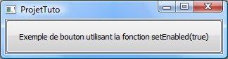
setEnabled(false)
Dans un autre cas, nous avons un QGroupBox cochable contenant notre bouton. Nous faisons en sorte qu'il ne soit pas coché et donc que le bouton ne soit pas utilisable (on va faire simple pour ne pas s'embarrasser avec des slots et on utilise la même fonction pour le bouton et pour le QGroupBox) :
#include <QApplication>
#include <QtGui>
int main(int argc, char *argv[])
{
QApplication app(argc, argv);
QWidget fenetre;
QGroupBox *groupe = new QGroupBox("Exemple de groupe non coché");
groupe->setCheckable(true);
groupe->setChecked(false);
groupe->setEnabled(false);
QPushButton *bouton = new QPushButton("Exemple de bouton utilisant la fonction setEnabled(false)");
bouton->setEnabled(false);
QVBoxLayout *vbox = new QVBoxLayout;
vbox->addWidget(bouton);
groupe->setLayout(vbox);
QVBoxLayout *vboxPrincipal = new QVBoxLayout(&fenetre);
vboxPrincipal->addWidget(groupe);
fenetre.show();
return app.exec();
}
Et voici le résultat :
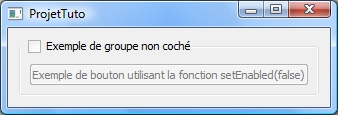
En bref, vous souhaitez que votre bouton soit utilisable, utilisez setEnabled(true) , bien que dans le cas d'une utilisation toute simple comme ici, ce ne soit pas utile de mettre ce code. Si vous souhaitez qu'il ne le soit pas, utilisez setEnabled(false) .
setFlat()
setFlat() est une fonction permettant de retirer les bordures d'un bouton, laissant visible le texte seulement. Pour setFlat(true), le bouton n'aura pas de bordures, tandis que pour false, il s'affichera normalement.
Voici un exemple de code illustrant ce que je viens de dire :
#include <QApplication>
#include <QPushButton>
int main(int argc, char *argv[])
{
QApplication app(argc, argv);
QPushButton *bouton = new QPushButton("Exemple de bouton utilisant la fonction setFlat(true)");
bouton->setFlat(true);
bouton->show();
return app.exec();
}
Et le résultat :
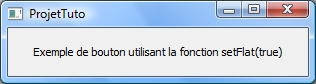
Il y a tout de même un défaut : si on veut vraiment planquer le bouton, il faut désactiver l'animation car lorsqu'on clique sur le bouton, on le voit apparaître pour s'animer. Nous allons voir tout de suite cette fonction qui est la suivante. ;)
setUpdatesEnabled()
setFlat() servait à rendre le bouton transparent mais, d'un point de vue esthétique, voir un bouton transparent apparaître pour s'enfoncer et se relâcher puis disparaître n'est pas très professionnel. :p
Heureusement, setUpdatesEnabled() existe. Nous allons donc immédiatement corriger ce petit défaut avec cette fonction mais juste avant, j'ai une petite remarque à vous faire à ce sujet :
Mais comment l'utiliser ? Rien de plus simple : c'est la même méthode que setEnabled() : soit on met true pour laisser les animations, soit on met false pour les désactiver. Plus précisément, on rend notre bouton parfaitement transparent et une des conséquences de le mettre ainsi est de désactiver les animations.
Note : désactiver l'animation d'un bouton (donc en le rendant transparent) ne vous empêchera pas de l'utiliser : il pourra toujours avoir son (ou ses) propres slots, ses dimensions, son placement,... propres. En résumé, se servir de cette fonction limitera juste l'utilisation du bouton, ni plus ni moins. ;)
Je vous remets un bout de code pour la compréhension (c'est super simple) :
#include <QApplication>
#include <QPushButton>
int main(int argc, char *argv[])
{
QApplication app(argc, argv);
QPushButton *bouton = new QPushButton("Exemple de bouton utilisant la fonction setFlat(true)");
bouton->setFlat(true); // Cette ligne n'est pas vraiment utile...
bouton->setUpdatesEnabled(false); // ... celle-ci ayant une efficacité plus ample.
bouton->show();
return app.exec();
}
C'est tout ! Testez le code, cliquez sur le bouton. Que se passe-t-il ? Rien. Absolument rien. Le bouton n'a même pas bronché !
C'est parfait tout ça... Ça vous intéresserait une dernière info ? Pas cher ! :lol:
Eh bien, pour vous donner une petite astuce, on peut facilement planquer un bouton sur une image (une carte par exemple) pour faire croire à l'utilisateur qu'il clique sur l'image et non sur ce bouton dont il ne connaît même pas l'existence. Eh oui, tous les coups sont permis dans la programmation. ;)
Mais chuuut ! Faut pas le dire : c'est uniquement entre nous :o
setCheckable()
setCheckable() ... encore setCheckable() vous devez déjà la connaître cette petite bête !
Eh bien oui, vous en avez sûrement déjà entendu parler, entre ZeroClassGenerator, la Fenêtre principale avec les actions des menus, etc.
Mais le saviez-vous ? On peut aussi s'en servir pour les boutons pour pouvoir les laisser enfoncés après un clic dessus.
Bref, c'est comme les autres fonctions, on met true si on veut que ce soit possible ou false si on n'en veut pas ! Mais dans ce cas, ne perdez pas votre temps à écrire une ligne, c'est automatiquement false si vous ne mettez rien.
Je n'entre pas plus dans les détails...
setChecked()
Cette fonction est associée à la précédente et elle sert à faire en sorte que le bouton soit coché ou non. On met true pour qu'il soit coché et false pour qu'il ne le soit pas.
Un autre signal : toggled(bool)
Et voici un nouveau signal : toggled(bool) ! Que de nouveautés dans cette partie, n'est-ce pas ?
toggled(bool) est un signal qui est envoyé quand le bouton est coché. Il a tout de même besoin d'une chose pour son activation : que le bouton soit cochable (donc que setCheckable() soit true ).
Voici un exemple de connexion à l'aide de ce signal :
Mais en quoi ce slot pourrait-il nous servir ? Eh bien vous avez créé un jeu avec une option "afficher le graphisme" par exemple. Pour une raison x, vous avez décidé de mettre un bouton cochable et vous voulez faire en sorte que le graphisme soit activé dès que l'utilisateur coche le bouton. Dans ce cas précis, vous aurez besoin de ce slot, pratique, non ?
hide() et show()
hide() et show() sont des slots permettant de masquer et d'afficher un widget (comme un QPushButton ou un QLabel par exemple). Ces fonctions sont équivalentes à setVisible(false) pour hide() et setVisible(true) pour show() . Voici les utilisations les plus courantes de ces deux slots :
/*
On a un QPushButton *bouton et un QLabel *label déjà créés...
*/
QObject::connect(bouton, SIGNAL(clicked()), label, SLOT(hide())); // On peut aussi mettre show()
Et l'autre utilisation courante :
/*
On a un QPushButton *bouton et un QLabel *label déjà créés...
Le slot est déclenché lors d'un clic sur ce bouton
*/
void FenPrincipale::operation()
{
label->hide(); // Ou show() comme vous voulez
}
Une seule petite remarque à faire pour show() : si vous l'utilisez normalement, il ouvrira une nouvelle fenêtre.
Les fonctions que vous connaissez déjà
À tout cela s'ajoutent logiquement les fonctions suivantes que vous connaissez déjà (elles sont détaillées dans le tuto de M@teo21) :
setCursor() : pour mettre un curseur spécial lorsqu'on pointe le bouton ;
setToolTip() : pour ajouter une infobulle au bouton ;
setFont() : pour définir la police du bouton ;
setIcon() : pour donner une icône au bouton ;
setText() : pour modifier le texte du bouton.
Des cas plus rares d'utilisations s'ajoutent. Je vous en détaillerai un en particulier si vous voulez bien vous donner la peine de passer à la sous-partie suivante de ce chapitre sur les QPushButton. :p
Je vais maintenant vous parler d'un cas plus rare d'utilisation des QPushButton : les boutons-menus ! Eh oui, une promesse est une promesse : on ne revient pas dessus. :-°
Les boutons-menus, c'est quoi ?
C'est assez logique de se poser ce type de question, ne vous en faites pas. ;)
Quand on regarde tout en bas de la doc sur les QPushButton, on constate qu'il y a un charabia qui parle des boutons-menus avec deux images l'illustrant. Oui, oui, c'est bien ça ce que je vais vous apprendre ici : créer ce type de bouton !
Un bouton-menu, c'est donc la même chose qu'un menu, à un point près : c'est un bouton, comme son nom l'indique si bien.
Tout cela doit sûrement vous faire penser aux QComboBox, n'est-ce pas ? Eh bien d'un côté, vous avez raison d'y penser mais ce serait bien que vous puissiez l'oublier pour cette partie : les QComboBox et les boutons-menus ne marchent pas de la même façon, vous le comprendrez bien assez tôt ! Bien sûr, vous avez la possibilité de faire énormément de choses avec les QComboBox mais l'objectif est de vous apprendre quelque chose de nouveau donc ne crachez pas dans la soupe. :p
Que vous dire de plus avant de se lancer ? Eh bien je ne vois pas autre chose que... c'est parti !
Créons notre premier bouton-menu
En tant que grands travailleurs, nous allons sagement regarder ce que peut nous apporter la doc des QPushButton. Voici ce qu'elle nous donne comme information au sujet de la création d'un bouton-menu :
Citation : Doc des QPushButton
void QPushButton::setMenu ( QMenu * menu )
Décortiquons ce code :
void QPushButton : c'est assez normal comme code mais il y a un petit sous-entendu : il faut créer un QPushButton. Eh oui, tout ne se fera pas d'un claquement de doigts que je sache !
setMenu : c'est tout aussi logique, c'est assez similaire au "addMenu()" des menus mais ça ne marche pas de la même manière...
( QMenu * menu ) : ce bout de code demande de manière implicite à ce qu'un menu soit déjà défini.
Maintenant que je vous ai expliqué tout cela, vous devez être capable de créer un bouton-menu tout seul. o_O Non, non, je ne plaisante pas, vous devez en être capable !
Vous avez 5 minutes montre en main ! :diable:
..... .... ...
C'est terminé, posez vos claviers ! Bon allez, je suis sympa, je vais gentiment faire la correction...
Pour cela, nous allons créer un projet qui sera constitué de trois fichiers :
#ifndef HEADER_FENPRINCIPALE
#define HEADER_FENPRINCIPALE
#include <QtGui>
class FenPrincipale : public QMainWindow
{
Q_OBJECT // On le met pour la suite
public:
FenPrincipale();
public slots:
private:
};
#endif
Et c'est au FenPrincipale.cpp que ça se gâte. ;)
Concrètement, qu'est-ce qu'on doit y mettre ? Eh bien on doit y mettre un bouton et un menu, ça n'avance pas beaucoup l'affaire...
On compile et sous vos yeux ébahis, une fenêtre s'ouvre... pas ! Eh bien non vous avez oublié de mettre les .dll : dommage, hein ?
Ce n'est pas un problème, on les met (du moins, les utilisateurs d'un OS les nécessitant) et cette fois-ci, la fenêtre s'ouvre pour de bon :
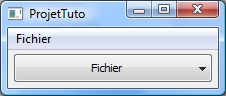
Ça y est, vous avez créé votre premier bouton-menu. Félicitations !
Ajouter une action à votre menu
Comme vous l'avez judicieusement remarqué, le bouton-menu n'a pas d'action. Bouhouhou ! Pauvre bouton-menu. :'( Il doit être triste ! Mais non, ne pleure pas petit bouton-menu, je vais t'en donner une action !
Comment donner une action à notre bouton-menu ?
Eh bien c'est super facile : il suffit d'en donner une à notre menu. o_O Eh oui, si vous avez suivi, vous avez dû comprendre qu'on utilisait le menu pour garnir le bouton-menu.
Joli non ? Pour info, je n'ai pas fait exprès de mettre "Quitter" en transparent : mon outil capture d'écran fait des siennes mais le résultat est beau, c'est le principal...
C'est tout pour les actions...
Masquer les menus
C'est bien joli d'avoir créé des boutons-menu... mais ça ne sert à rien si les menus normaux sont toujours visibles :-°
On pourrait bien sûr se servir de setMask() avec QRegion pour faire ce genre de choses mais ce serait vraiment trop compliqué dans le cadre d'un tuto.
On va effectuer quelque chose de plus simple : nous allons créer un QMenuBar et nous y mettrons notre menu Fichier. Résultat : le menu Fichier ne se situera pas sur la fenêtre (nulle part d'ailleurs) mais il sera existant, ce qui nous permettra quand même de faire marcher notre bouton-menu.
Vous devez vous dire qu'il faut vraiment avoir des idées tordues pour inventer ça, n'est-ce pas ? Eh bien le principal est que ça marche, le reste, j'aurais tendance à dire qu'on s'en fiche...
Voici donc le nouveau code :
#include "FenPrincipale.h"
FenPrincipale::FenPrincipale()
{
setFixedSize(210, 60);
QMenuBar *barreMenu = new QMenuBar; // On crée notre QMenuBar
QMenu *menuFichier = barreMenu->addMenu("&Fichier"); // On y met le menuFichier...
QAction *actionQuitter = menuFichier->addAction("Quitter");
connect(actionQuitter, SIGNAL(triggered()), qApp, SLOT(quit()));
menuFichier->setVisible(false);
QPushButton *boutonFichier = new QPushButton("Fichier", this);
boutonFichier->setMenu(menuFichier);
boutonFichier->setGeometry(5, 25, 200, 30);
}
Non, plus sérieusement, il existe un moyen bien plus simple : il s'agit de créer nos menus sans les mettre dans une QMenuBar et de les associer au boutons-menus. Je vous fais confiance et je vous laisse effectuer ces petits changements très simples. Sachez qu'il est aussi possible de créer des actions (QAction donc) et de les associer à notre bouton-menu.
Maintenant, le QCM !
C'est fini pour ce chapitre : vous êtes tous devenus des experts en matière de boutons ! Si le zéro dont je parlais en début de chapitre vient vous poser la même question qu'à moi il y a longtemps, vous saurez quoi lui répondre maintenant que nous avons bien travaillé. ;)
Je vous dis donc à bientôt (ou à tout de suite si vous souhaitez continuer maintenant) dans la suite du cours !
Dans vos programmes, il peut parfois être pratique ou même indispensable de pouvoir lire et écrire dans les fichiers. Qt propose pour cela des classes toutes faites aux fonctionnalités très larges. Voyons cela de plus près. Dans un premier temps, nous verrons en quoi il peut s'avérer pratique d'exploiter les fichiers, en enchaînant avec la lecture dans les fichiers, suivie de l'écriture, avant de terminer le chapitre sur quelques fonctionnalités et informations en vrac. :)
Toute fonctionnalité a pour but, comme son nom l'indique, d'avoir une fonction, en gros de servir à quelque chose. On est en droit de se poser la question "En quoi la manipulation des fichiers peut-elle être utile ?". Pour y répondre, nous allons passer par une question sous-jacente : quels sont les cas de figure qui nécessitent l'utilisation du disque dur ? ^^
On vous l'a répété souvent, je suppose : la mémoire vive ou RAM est une mémoire temporaire. C'est-à-dire que les données que vous y enregistrez n'y restent pas éternellement ; au mieux, elles disparaissent lors de l'extinction de l'ordinateur. Jusqu'à maintenant, vous n'avez cessé de l'utiliser, cette mémoire vive. Vos variables et objets sont en effet stockés en mémoire temporaire et n'existent que pendant l'utilisation de votre programme. Considérons la déclaration du QVector suivant (nous verrons en détail de quoi il s'agit dans les chapitres suivants) :
QVector <unsigned long> Scores;
En gros, supposons qu'il nous servira à stocker les résultats du jeu du pendu. Au fil de notre programme, le QVector (qui est une sorte de tableau ressemblant fortement à std::vector, mais en version Qt) change de taille, de contenu, etc. Toutes ces modifications concernent le tableau mais malheureusement pour nous, ce dernier est stocké dans la RAM. En clair, il vous sera impossible de retrouver vos résultats dans une autre instance du programme (bah oui). C'est idiot mais c'est ainsi, ce n'est pas fait pour cela. Mais en réalité, ce n'est pas si idiot que ça, la mémoire vive a, elle aussi, une utilité, comme toute chose : elle accélère l'exécution du programme qui lit les données qui y sont stockées.
Mais comment faut-il s'y prendre pour stocker les données de manière permanente ? Et c'est là que le disque dur entre en jeu. Le disque dur (ou HDD pour hard drive disk en anglais) permet de stocker les données de manière permanente, si l'on veut y supprimer quelque chose, il faut le faire manuellement et explicitement (vous connaissez : clic droit puis "supprimer"). C'est bien beau, mais comment accéder à cet espace de stockage à partir de notre programme ? Comment y lire les données ou y écrire ? Ce qu'il faut savoir, c'est que les OS organisent le disque dur (en premier lieu en partitions d'accord) en fichiers. Un fichier sur le disque dur est comparable à un objet sur la RAM : c'est un bout de mémoire où l'on stocke ses données. Je pourrais vous citer par exemple un fichier texte, qui sert à stocker... des chaînes de caractères.
Pour satisfaire nos attentes, les programmeurs de Qt ont créé la classe QFile. C'est la classe indispensable pour manipuler les fichiers et dans ce tutoriel, je vais justement vous apprendre à l'utiliser correctement. C'est parti !
Dans cette sous-partie, nous verrons comment lire dans les fichiers, l'écriture est au programme de la prochaine sous-partie. Afin de pouvoir utiliser QFile, il faut commencer par inclure le bon fichier, c'est la première étape à ne jamais oublier :
#include <QFile>
Anticipons. Il faut savoir que l'on récupère le contenu d'un fichier le plus couramment dans une instance de QString (mais dans certains cas plus rares, celui de la manipulation des fichiers binaires, à l'aide de QByteArray). Certains programmeurs passent même parfois par un objet flux QTextStream, mais on peut s'en passer (cela dit, je vous présenterai les deux méthodes). Commençons par la méthode la plus simple qui consiste à passer par un QString uniquement. On va tout de même déjà inclure QTextStream afin de l'utiliser plus tard. Les inclusions nécessaires sont donc :
#include <QApplication>
#include <QTextEdit> // Nous allons tout de même afficher le contenu du fichier ^^
#include <QFile> // Pour utiliser le fichier
#include <QString> // Stocke le contenu du fichier
#include <QTextStream> // Flux sortant du fichier
Pour une question de simplicité et de compréhension du tuto, j'ai décidé :
De me servir uniquement du main (remarque : le code n'est pas très long et relativement simple ^^ ).
D'utiliser un fichier banal ayant pour extension ".txt" (texte).
Tel que prévu, j'utiliserai une simple fenêtre avec un QTextEdit pour afficher le contenu du fichier. Voici donc la structure du main :
À la ligne 4, je déclare le fameux QTextEdit. À la ligne 5, je le redimensionne en lui donnant des dimensions raisonnables tout en prenant garde à ce que la fenêtre ne colle pas au bord de votre écran lors de son ouverture. N'oublions pas la ligne 6 qui paramètre la zone de texte de telle sorte qu'on ne puisse rien y modifier directement. À la ligne 8, je déclare un objet QString qui va se charger de stocker le texte du fichier (on va voir cela dans un instant) ou un message d'erreur si le fichier n'a pu être ouvert. Enfin, on place à la ligne 10 tout le code concernant l'ouverture et la récupération des données.
Ce que nous allons faire à présent, c'est déclarer un objet QFile en lui précisant le chemin du fichier (code à placer à la ligne 10) :
QFile fichier("poeme.txt");
Dans le dossier de l'exécutable, j'ai donc un fichier que j'aimerais lire à partir de la fenêtre. En déclarant ainsi un objet QFile, le fichier reste fermé. Pour l'ouverture, on utilisera la fonction QFile::open() et on enverra en paramètre un flag de QIODevice pour définir le mode d'ouverture. Il en existe huit :
Constante
Valeur correspondante
Description
QIODevice::ReadOnly
0x0001
Ouverture en lecture seule.
QIODevice::WriteOnly
0x0002
Ouverture en écriture seule.
QIODevice::ReadWrite
0x0001 | 0x0002
Ouverture en lecture/écriture.
QIODevice::Truncate
0x0008
- À utiliser avec WriteOnly ou ReadWrite ; - Spécifie que le contenu sera au préalable supprimé.
QIODevice::Append
0x0004
- Peut s'utiliser avec tout ; - Spécifie que le curseur sera placé à la fin du fichier.
QIODevice::Text
0x0010
- Peut s'utiliser avec tout ; - Apporte quelques optimisations quand il s'agit d'un texte.
QIODevice::NotOpen
0x0000
N'ouvre tout simplement pas le fichier.
QIODevice::Unbuffered
0x0020
Désactive l'utilisation d'un buffer.
La fonction open revoie true si le fichier a pu être ouvert et dans le cas contraire, false. Nous allons à présent ouvrir le fichier poeme.txt en lecture seule. Pour cela, nous allons utiliser une structure if - else en attribuant un code spécifique pour chaque valeur de open() retournée. On obtient ceci :
Supposons à présent que le fichier ait pu être ouvert, il faut pouvoir récupérer son contenu avant de fermer le fichier à l'aide de la fonction membre close(). La méthode la plus simple consiste tout simplement à utiliser la fonction readAll() et à stocker la chaîne renvoyée dans le QString (précédemment nommé "texte"). Il faut aussi prévoir le coup si jamais le fichier n'a pas pu être ouvert : nous allons affecter au QString texte un message d'erreur. On obtient le code suivant :
Si tout se passe bien, lorsque vous compilez, vous devriez vous retrouver avec la fenêtre suivante (avec le texte de votre fichier) :
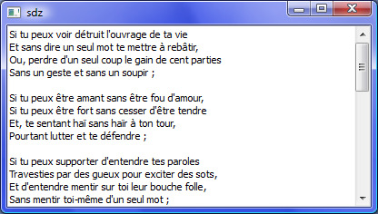
Si par contre, le fichier n'a pas pu être ouvert, vous aurez le message d'erreur à l'écran. Il existe encore un autre moyen plus précis de récupérer le contenu d'un fichier. C'est cette méthode qui est utilisée à titre d'exemple dans la doc Qt. Il s'agit cette fois de passer par un objet flux de type QTextStream en procédant ainsi :
Ici, on déclare un objet flux QTextStream en lui envoyant l'adresse de l'objet QFile "fichier" en lui permettant ainsi de lire son contenu. Tant qu'on n'est pas arrivé au bout du fichier, on continue à récupérer les lignes. Essayez une fois de compiler ce code et... surprise ! Cela fonctionne, mais les lignes ont été mises à la chaîne sans le moindre retour à la ligne. Heureusement, il est très simple d'y remédier :
Mais en général, on n'utilise pas readLine() pour récupérer tout le contenu ! En effet, son utilisation est plus fréquente quand il s'agit d'appliquer un processus bien déterminé au contenu du fichier ligne par ligne, comme dans cet exemple :
L'écriture dans les fichiers n'est pas nécessairement plus compliquée que la lecture. Encore une fois, les classes de Qt sont déjà tellement simplifiées qu'elles nous permettent de ne pas trop s'attarder sur ce concept. En gros, il existe deux méthodes principales pour écrire dans un fichier, comme tout à l'heure avec la lecture :
avec un objet flux de type QTextStream, très pratique et simple d'utilisation ;
sans QTextStream en utilisant directement les méthodes de Qt.
Je vais commencer par la méthode la plus simple, c'est-à-dire la première dans l'ordre où je les ai écrites ci-dessus. Pour vous montrer comment implémenter et utiliser ceci, je vais m'appuyer sur un exemple concret de programme "fini" qui vous permettra d'écrire dans le fichier de votre choix (chemin au choix) le texte de votre choix. En gros, notre petit programme modeste va se structurer de la manière suivante :
On demande à l'utilisateur le chemin absolu ou relatif du fichier dans lequel écrire, si ce dernier n'existe pas déjà, on le crée. On se servira de QInputDialog::getText et de QString.
Si le QString récupéré n'est pas vide, on continue.
On demande à l'utilisateur de saisir dans un QInputDialog::getText (encore) le texte à écrire dans le fichier.
On crée un objet de type QFile pour l'écriture dans le fichier.
On ouvre le fichier en écriture en utilisant les flags QIODevice::WriteOnly et QIODevice::Text.
On crée un objet flux de type QTextStream pour manipuler le flux entrant du fichier.
On écrit le texte saisi par l'utilisateur dans le fichier en nous servant de l'objet flux précédemment déclaré.
On ferme le fichier, on quitte le programme.
Première réflexion : qu'est-ce qu'on va devoir inclure ? Si je suis ce que je viens d'écrire, j'obtiens bien :
Notez bien que j'ai aussi inclus QMessageBox étant donné que j'affiche un message d'erreur si le chemin spécifié ou le texte à écrire est resté vide. Bon, je vous donne déjà le code de base du main, qui sera une fois de plus notre seule fonction :
int main(int argc, char** argv)
{
QApplication app(argc, argv);
// code à insérer ici;
exit(0);
}
Certains se demanderont certainement pourquoi j'utilise exit() et ils ont bien raison de demander. Et bien, c'est pour la simple et bonne raison qu'autrement, le programme ne quittera pas normalement ou ne quittera pas du tout. C'est la seule solution efficace et pas trop barbare. Pour ceux qui y auraient pensé, QApplication::quit() n'est pas approprié ici. Pour la saisie du chemin du fichier, voici le code que je propose :
QString chemin;
while((chemin = QInputDialog::getText(NULL,"Fichier","Quel est le chemin du fichier ?")).isEmpty())
QMessageBox::critical(NULL,"Erreur","Aucun chemin n'a été spécifié !");
Le fonctionnement de cette boucle est si simple que je ne vais rien détailler. Pour la saisie du texte, on obtient à peu près la même chose :
QString texte;
while((texte = QInputDialog::getText(NULL, "Texte", "Que voulez-vous écrire dans "+chemin.toLatin1())).isEmpty())
QMessageBox::critical(NULL,"Erreur","Aucun texte n'a été spécifié !");
Pareil, le code est très simple à comprendre. C'est à partir de ce moment là que ça devient un peu plus intéressant, maintenant, nous allons ouvrir le fichier spécifié par l'utilisateur. Pour cela, je me servirai des flags de QIODevice mentionnés tout à l'heure. J'obtiens ce code :
Maintenant que le fichier est ouvert en écriture seule, on peut créer notre objet flux QTextStream et lui envoyer en paramètre du constructeur l'adresse de l'objet QFile :
QTextStream flux(&fichier);
Ce qu'il nous reste à faire est maintenant très simple : nous allons utiliser le flux déclaré et lui envoyer le texte saisi par l'utilisateur. Enfin, n'oublions pas de fermer le fichier.
flux << texte;
fichier.close();
Et c'est tout ! :) Avouez que ce n'est pas bien difficile à mettre en œuvre. En réalité, les flux sont faits pour cela, pour nous faciliter les choses. Pour ceux qui n'auraient pas bien suivi toutes les étapes (ou pour les paresseux), voici le main complet :
int main(int argc, char** argv)
{
QApplication app(argc, argv);
QString chemin, texte;
while((chemin = QInputDialog::getText(NULL,"Fichier","Quel est le chemin du fichier ?")).isEmpty())
QMessageBox::critical(NULL,"Erreur","Aucun chemin n'a été spécifié !");
while((texte = QInputDialog::getText(NULL, "Texte", "Que voulez-vous écrire dans "+chemin.toLatin1())).isEmpty())
QMessageBox::critical(NULL,"Erreur","Aucun texte n'a été spécifié !");
QFile fichier(chemin);
fichier.open(QIODevice::WriteOnly | QIODevice::Text);
QTextStream flux(&fichier);
flux << texte;
fichier.close();
exit(0);
}
Compilez pour voir ce que cela donne. Voici une petite démonstration de l'exécution du code :
On saisit le chemin du fichier en incluant son nom : Image.
On saisit le texte à écrire dans le fichier : Image.
Le texte a bien été écrit dans le fichier : Image.
Nous allons dès maintenant nous attaquer à l'autre technique d'écriture dans les fichiers : en nous servant des fonctions membres définies dans QFile. Nous allons conserver les mêmes codes que tout à l'heure sauf que nous allons remplacer l'utilisation de la classe QTextStream par des appels aux fonctions de QFile. Voici trois des plus utilisées :
Fonction
Paramètre(s)
Description
write
const char * data, qint64 maxSize
Cette fonction écrit un texte brut dans le fichier. On doit préciser le nombre de caractères de la chaîne en second paramètre.
write
const QByteArray & byteArray
Cette fonction (surchargée) écrit le contenu d'un objet QByteArray dans le fichier.
putChar
char c
Cette fois, la fonction n'écrit qu'un seul caractère dans le fichier. Le curseur est placé après le caractère écrit.
Pour écrire le texte spécifié par l'utilisateur du programme à l'aide de la fonction write() par exemple, on fait tout simplement :
fichier.write(texte.toLatin1(),texte.size());
Ou alors, si l'on préfère passer par un objet QByteArray, on doit écrire :
En plus, si vous allez faire un tour dans la doc Qt, vous vous rendrez compte que la méthode toLatin1() de QString renvoie un objet QByteArray. Et enfin, voici une petite démonstration illustrant le fonctionnement de putChar :
fichier.putChar(texte.at(0).toLatin1());
Ne confondez pas, la méthode toLatin1() de QChar renvoie une variable de type char. Pour écrire tout un texte caractère par caractère, il n'y pas de secret :
Et hop ! Vous venez donc d'apprendre à lire et à écrire dans les fichiers. Je l'ai déjà dit mais je me répète : la manipulation des fichiers est une fonctionnalité indispensable et il ne faut pas hésiter à l'utiliser en cas de besoin, et ces cas-là, on les rencontre souvent, que ce soit pour stocker les scores d'un jeu, pour implémenter une persistance d'objet (cfPersistance et Sérialisation) ou autres. Mais vous n'avez pas encore tout vu ! En effet, il est possible de copier des fichiers, de déplacer les fichiers et même de les renommer ! Eh bien c'est exactement ce qui est au programme de la sous-partie suivante. ;)
Comme promis, dans cette sous-partie, nous allons nous pencher sur des fonctionnalités supplémentaires de Qt relatives à la gestion des fichiers. Cette partie du chapitre sera, dans un souci de clarté, beaucoup plus structurée que les trois précédentes sous-parties. Nous n'allons pas nous éterniser sur chaque concept abordé, je vais seulement vous donner une explication et un exemple, vous pourrez ainsi facilement revenir là-dessus lorsque vous en aurez besoin et trouver rapidement une réponse à votre question.
Notez qu'une utilisation de QFile pourrait être considérée comme excessive dans quelques cas présentés ci-dessous, revenant à peu près à utiliser une tronçonneuse pour couper une feuille de papier (les cas concernés sont ceux de la récupération d'informations avec QFile : la vérification de l'existence d'un fichier et la récupération de sa taille). Si vous souhaitez par exemple récupérer un booléen du fait qu'un fichier existe ou non, choisissez plutôt des classes comme QFileInfo.
Copier un fichier
La copie d'un fichier nécessite l'utilisation de la fonction membre copy() de QFile. Cette fonction prend en paramètre le nom du fichier de copie. Ce n'est pas un scoop, mais je le souligne quand même : c'est enfantin à utiliser !
QFile fichier("poeme.txt");
if(!fichier.copy("copie.txt"))
QMessageBox::critical(NULL,"Erreur","Impossible de copier poeme.txt");
La copie peut échouer, par exemple s'il existe déjà un fichier du nom de copie.txt.
Vérifier si un fichier existe
Pour nous assurer de l'existence d'un fichier, on utilisera en général la méthode exists() de QFile. Elle renvoie true si le fichier existe et false dans le cas contraire.
QFile fichier("poeme.txt");
if(!fichier.exists())
QMessageBox::critical(NULL,"Erreur","Le fichier spécifié n'existe pas !");
else QMessageBox::information(NULL,"Information","Le fichier spécifié existe !");
Ou plus simplement :
if(!QFile::exists("poeme.txt"))
QMessageBox::critical(NULL,"Erreur","Le fichier spécifié n'existe pas !");
else QMessageBox::information(NULL,"Information","Le fichier spécifié existe !");
Effacer un fichier
Ici, on va se servir de QFile::remove(). Blabla, voici un exemple de code :
QFile fichier("poeme.txt");
if(!fichier.remove())
QMessageBox::critical(NULL,"Erreur","Impossible de supprimer le fichier !");
Ou de manière plus concise :
if(!QFile::remove("poeme.txt"))
QMessageBox::critical(NULL,"Erreur","Impossible de supprimer le fichier !");
Renommer un fichier
En un mot comme en mille : QFile::rename() ! Et pour l'exemple concret :
QFile fichier("poeme.txt");
if(!fichier.rename("nouveau_nom.txt"))
QMessageBox::critical(NULL,"Erreur","Impossible de renommer le fichier !");
La version static de cette méthode existe aussi.
Obtenir la taille d'un fichier
Pour obtenir la taille d'un fichier en bytes, on utilisera la méthode QFile::size().
Cette fois-ci, la classe concernée ne sera plus de QFile mais QFileDialog. Cette classe permet à l'aide de certaines de ses fonctions de récupérer des informations par le biais d'une interaction avec l'utilisateur. Quelle type d'interaction ? Tout simplement une demande à l'utilisateur de sélectionner un chemin de fichier/dossier, selon la fonction statique utilisée :
getExistingDirectory() qui retourne un QString d'un répertoire que sélectionne l'utilisateur.
getOpenFileName() qui retourne un QString du chemin d'un fichier que sélectionne l'utilisateur (boîte de dialogue avec un bouton nommé par exemple "Ouvrir").
getOpenFileNames() qui retourne un QStringList d'un ou de plusieurs chemins de fichiers que sélectionne l'utilisateur.
getSaveFileName() qui retourne un QString d'un emplacement de fichier que sélectionne l'utilisateur (boîte de dialogue avec un bouton nommé par exemple "Enregistrer").
Et voilà ! Étant arrivés au terme de ce chapitre, vous avez emmagasiné pas mal de notions, notions qui sont fondamentales si vous souhaitez développer des programmes sérieux. On retrouve une fonction "charger" et/ou "enregistrer" un peu dans tous les programmes, ce chapitre n'est donc pas à négliger.
Il est possible que certains se disent : "On a déjà un tuto sur les paramètres de la fonction main, à quoi celui-ci sert-il ?". Et bien ce tutoriel était pour le codage en C et pour le codage en C++ et non pour le codage avec Qt. Cette récupération que nous allons voir durant ce cours se fait avec une classe propre à Qt, rien à voir de plus que le thème avec le tutoriel auquel vous faites peut-être allusion.
Voici une courte liste des chapitres jugés fondamentaux pour une bonne compréhension, en plus des chapitres vous faisant réaliser vos premiers pas :
Ce chapitre est séparé en trois parties ("Un peu de culture", "Théorie" et "Pratique") ainsi que d'une annexe vous permettant d'utiliser les différentes méthodes données à travers ce tuto en fonction de l'OS de l'utilisateur. A l'issu de la première partie, vous en saurez un peu plus sur la fonction main en général. Dans la seconde partie, nous verrons les trois manières de procéder avec Qt (une ne sera abordée que de nom), et dans la dernière partie, nous appliquerons la théorie avec du code pouvant être réutilisé dans vos projets.
Nous aborderons ici le sujet de la fonction main. Pourquoi en parler ? Parce que ce tutoriel prend pour base cette fonction que nous allons voir dans cette partie.
La fonction main est la première fonction appelée par le système d'exploitation lors de l'ouverture d'une application. Son nom doit impérativement être main car c'est celle que doit trouver le compilateur. Elle est la fonction marquant le début de chaque programme, en appelant d'autres ou non. Elle est constituée comme toute fonction d'une en-tête (cf le code donné à la fin de cette sous-partie) et d'un bloc pouvant en contenir d'autres (un bloc est en fait ce qui se trouve entre les accolades { et } que l'on retrouve dans tous les programmes).
Dans les années 1980 à 1990 (aucune information ne précise la date exacte), cette fonction ne renvoyait rien, elle était donc de type void, ce qu'acceptent encore quelques compilateurs. Plus récemment, des améliorations y ont introduit les arguments qui sont en fait dans la norme actuelle de mettre "int argc" et "char *argv[]". Elle s'est mise à renvoyer des informations sous la forme d'un int qui informait du bon déroulement du programme (d'où return 0 et return 1). Note : Il est préférable de mettre return EXIT_SUCCESS dans vos programmes au cas où la norme serait amenée à changer... En résumé, l'ordre logique du déroulement d'un programme serait tout d'abord le lancement de l'application, donc l'appel de la fonction main et des fonctions qu'elle appelle si c'est le cas, le déroulement de l'exécution puis le renvoi d'une information annonçant si oui ou non l'application s'est déroulée correctement.
Nous voici donc à la partie théorique du tutoriel.
Dans de ce cours sur les paramètres de la fonction main en C, l'auteur présente un schéma du tableau de pointeurs argv (dont la taille est définie par la valeur de argc) :
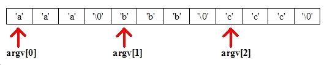
En règle générale, les premiers éléments d'argv ne sont pas censés correspondre à ce type de chaine mais plutôt au nom du programme et/ou au chemin relatif ou absolu du programme, le tout dépendant du système d'exploitation et du mode d'exécution du programme. Par exemple, Mac ne va pas renseigner dans les arguments une ouverture par double-clic sur un fichier.
Résultat :
L'utilisateur ne perd pas de temps à passer par la fonction d'ouverture présumée existante ;
Quand il double-clique sur un fichier s'ouvrant avec le programme concerné, le programme ne s'ouvre pas comme on l'ouvrirait normalement par le biais de l'exécutable ;
Ça fait plus "pro" d'avoir un système de récupération des arguments récupérés par la fonction main. :p
Si la taille d'argv est strictement supérieure à 1, les arguments de la fonction main contiennent quelque chose de plus que simplement le chemin de l'exécutable mais également... le chemin du fichier qui a ouvert ce programme !
Le rapport avec Qt
Le rapport avec Qt est la disposition de deux classes permettant de récupérer les arguments : QCoreApplication avec la fonction statique QCoreApplication::arguments() et QFileOpenEvent (utilisé avec Mac pour le double-clic sur un fichier). Lors de l'introduction, je parlais de trois moyens différents de récupérer les arguments. En effet, il en existe une troisième solution qui est devenue dépréciée et qui a apparemment disparue de la documentation : une combinaison de QCoreApplication::argc() et de QCoreApplication::argv() utilisable avec qApp. La première solution donnée de récupération des arguments avec QCoreApplication étant la plus pratique et la plus efficace, nous ne verrons pas la combinaison donnée ci-dessus.
Comme je vous le disais plus tôt, le système d'exploitation Macintosh ne fonctionne pas parfaitement comme les autres OS, mais ce n'est pas pour autant qu'on ne peut pas récupérer les arguments car la classe QFileOpenEvent existe, bien qu'elle ne soit utilisable que sous Mac (éventuel problème de portabilité donc).
Cette classe utilise les événements, il suffit donc de se servir de la fonction installEventFilter() sur les instances du programme pour pouvoir se servir de la classe et pour pouvoir par la même occasion récupérer ce qu'on recherche :
int main(int argc, char *argv[])
{
QApplication app(argc, argv);
FenPrincipale fenetre;
QApplication::instance()->installEventFilter(&fenetre); // C'est cette ligne qui prépare le tout
fenetre.show();
return app.exec();
}
Il ne nous reste plus qu'à récupérer le tout avec notre classe et sa fonction file() :
bool FenPrincipale::eventFilter(QObject *obj, QEvent *event)
{
if(event->type() == QEvent::FileOpen)
{
/*
Si l'event FileOpen a été appelé, on effectue nos opérations...
*/
chargerFichier(((QFileOpenEvent*)event)->file());
return true;
}
else
{
/*
Sinon, le programme s'est exécuté à partir de son icône et
non de celle d'un autre fichier s'ouvrant avec lui
*/
return QObject::eventFilter(obj, event);
}
}
Dans le cas où une variable de type QString avait été définie, on aurait ici créé une fonction chargerFichier() dont le constructeur serait le suivant :
Récapitulons ce qui a été dit plus tôt sur le codage de la récupération :
Citation : zAmnellL
Si la taille d'argv est strictement supérieure à 1, les arguments de la fonction main contiennent quelque chose de plus que simplement le chemin de l'exécutable mais également... le chemin du fichier qui a ouvert ce programme !
Voyez-vous déjà une condition se mettre en place ? Non ? Peu importe, nous allons commencer par analyser la fonction arguments() de QCoreApplication afin d'y voir plus clair :
QStringList QCoreApplication::arguments ()
Cette fonction renvoie un tableau de QString, soit un QStringList, utilisable très simplement. Pour énumérer la taille d'un tableau de type QStringList, il suffit d'utiliser la fonction count() qui renvoie quant à elle un int, et ici, pour être plus précis, le const signifie que cette fonction ne modifie pas les attributs de sa classe.
La condition est donc la suivante :
if(QCoreApplication::arguments().count() > 1)
// On effectue nos opérations
Testons l'efficacité de ce code avec un programme très simple constitué uniquement d'un main.cpp pour éviter d'avoir à créer trop de fichiers pour si peu. Ce programme affichera dans une boîte de dialogue le contenu de QCoreApplication::arguments().at(1) .
#include <QApplication>
#include <QtGui>
class FenPrincipale : public QWidget
{
Q_OBJECT
public :
FenPrincipale()
{
QStringList args = QCoreApplication::arguments();
if(args.count() > 1) // Notre condition
{
// On affiche nos arguments dans une boîte de dialogue en donnant l'emplacement du fichier ayant ouvert le programme :
QMessageBox::information(NULL, "Récupération des arguments", "L'argument récupéré est le suivant : \n" + args.at(1));
}
else
{
// Sinon, on informe que le programme a été ouvert par son exécutable :
QMessageBox::information(NULL, "Récupération des arguments", "Le programme s'est lancé normalement...");
}
};
};
#include "main.moc"
int main(int argc, char *argv[])
{
QApplication app(argc, argv);
FenPrincipale fenetre;
exit(0); // On ferme directement une fois avoir vu la chose à observer...
}
En admettant que nous ayons créé un projet plus complexe, il aurait été possible d'envoyer une fonction chargerFichier() par exemple de la manière suivante :
FenPrincipale::FenPrincipale()
{
/*
Votre code PUIS la condition :
Dans le cas d'un éditeur de texte, si vous appelez la condition avant la déclaration d'une zone de texte,
vous vous retrouverez avec une erreur car il sera impossible de charger un fichier avec un pointeur/une variable
inexistante.
*/
args = QCoreApplication::arguments(); // Avoir mis "QStringList args;" dans "private" ou autre du .h
if(args.count() > 1) // Notre condition
{
chargerFichier(args);
}
}
void FenPrincipale::chargerFichier(QStringList &args)
{
// ...
}
Nous allons voir dans cette dernière partie comment récupérer le nom de l'OS sous lequel l'utilisateur de votre programme tourne. En fonction de cela, il sera possible d'utiliser soit la méthode de récupération des paramètres de la fonction main() avec Mac, soit la méthode pour les autres systèmes d'exploitation. Cela pourra vous servir à rendre vos programmes codés avec Qt parfaitement portables. Tout ce que je vais vous présenter dans cette sous-partie est bien sûr parfaitement en rapport avec ce framework.
Brèves explications
Qt permet à travers l'en-tête <QtGlobal> d'utiliser de divers fonctions, types et macros. Dans le cas présent, nous souhaitons récupérer le nom de l'OS sur lequel l'utilisateur fait tourner l'application. Nous allons donc logiquement nous orienter vers les macros. Voici un petit tableau listant les macros dont vous allez peut être (même sûrement) avoir besoin un jour dans le cadre d'un projet quelconque :
Macro
Description
Q_WS_X11
Cette macro est définie sous X11.
Q_WS_MAC
Cette macro est définie sous Mac.
Q_WS_WIN
Celle-ci est définie sous Windows.
A cela s'ajoutent des macros à caractère moins global telles que Q_OS_WIN32, Q_WS_QWS et bien d'autres encore qui vérifient la plupart du temps un ou plusieurs paramètre(s) supplémentaire(s). Pour plus d'informations, vous pouvez toujours consulter cette page : cliquez ici pour y accéder !
Utilisation en rapport avec le sujet du tutoriel
Si vous avez correctement lu tout ce que nous avons étudié ensemble jusque là, que je vous dise qu'il faut utiliser une vérification du nom de l'OS pour utiliser une méthode ou une autre de récupération des arguments de notre chère fonction main() ne doit certainement pas vous étonner. Dans le cas contraire, et bien je vous recommande de lire correctement le tutoriel de manière à ce que vous puissiez comprendre ce que je vais vous montrer ici.
A partir de ce que nous savons, il faudrait faire en sorte que ce type de chose puisse être suivit :
Citation
- Est-ce que Q_WS_MAC est définie ? - Non. - Dans ce cas, j'appelle la fonction ouvertureAutresOS() !
Ou dans le cas contraire :
Citation
- Est-ce que Q_WS_MAC est définie ? - Oui. - Dans ce cas, j'appelle la fonction ouvertureMac() !
Maintenant que vous avez saisi le principe, nous pouvons représenter cela par un code qui est le suivant :
#if defined(Q_WS_MAC)
ouvertureMac();
// Fonction qui serait spécialement créée pour Mac...
#else
if(QCoreApplication::arguments().count() > 1)
{
ouvertureAutresOS();
// Fonction qui serait créée pour les autres OS...
}
#endif
Voilà, ce chapitre est terminé. ;) Je compte sur vous pour réaliser de jolis programmes pouvant récupérer avec Qt tout ce que nous venons de voir et je vous donne rendez-vous à la suite !
Nous voici dans une partie pouvant déstabiliser les débutants par sa difficulté. Malgré cela, je vais faire de mon mieux pour que vous puissiez saisir de la meilleure façon possible le sujet et pour que vous puissiez vous resservir de tout ce que nous allons apprendre. ;)
Il ne sera traité durant ce chapitre ni QPainter, ni QGradient car traiter cela impliquerait un départ vers les limbes du hors sujet. Je considèrerai donc que vous avez suffisamment de notions pour réussir à suivre. Si ce n'est pas le cas, faites un tour dans la documentation ou dans un chapitre/tuto traitant le sujet !
Le sujet du jour est, comme le titre du chapitre l'indique, la création d'un style de fenêtre entièrement personnalisé. A la suite, je vais aborder la conception du style de manière progressive, à l'aide de captures d'écran, d'explications et d'extraits de code. Mon objectif est de vous faire penser que nous codons ensemble le style.
Voici ce que nous allons apprendre à faire durant ce chapitre :
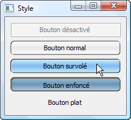
Et oui, le style que nous allons réaliser ensemble est en quelques sortes un mélange des styles propres à Mac et à Windows par le biais d'une petite centaine de lignes. Toutefois, à l'aboutissement du chapitre, il n'aura été réalisé que le style des boutons et non des autres types widgets. Si vous vous ennuyez ou que vous cherchez à parfaire vos techniques, n'hésitez pas à terminer le style que nous allons créer et peut être même à l'utiliser dans vos projets ! La majorité des styles situés dans les sources de Qt pèsent plus de 100Ko donc ne vous en faites pas s'il vous semble que la taille de votre fichier de style est un peu grosse au niveau du rapport nombre de lignes/résultat... :p
Créer un style n'est jamais une mince affaire, cela nécessite toujours une grande quantité de temps à consacrer. Qui dit créer un style dit logiquement créer une classe, il va donc falloir créer une classe qui sera le réceptacle de tout le code de mise en forme des widgets de toute fenêtre l'utilisant. Au niveau de l'héritage, je propose de faire hériter la classe de QCommonStyle.
Pour l'occasion, j'ai créé quatre fichiers qui sont les suivants :
main.cpp ;
FenPrincipale.cpp ;
FenPrincipale.h ;
Style.cpp ;
Afin que vous puissiez suivre, je vous fournis le code de base de ces fichiers.
#include "FenPrincipale.h"
int main(int argc, char *argv[])
{
QApplication app(argc, argv);
app.setStyle(new Style); // Ligne détaillée à la suite.
FenPrincipale fenetre;
fenetre.show();
return app.exec();
}
#ifndef HEADER_FENPRINCIPALE
#define HEADER_FENPRINCIPALE
#include <QApplication>
#include <QtGui>
class Style : public QCommonStyle
{
Q_OBJECT
public:
Style();
};
class FenPrincipale : public QMainWindow
{
public:
FenPrincipale();
};
#endif
#include "FenPrincipale.h"
FenPrincipale::FenPrincipale()
{
QWidget *zoneCentrale = new QWidget;
setCentralWidget(zoneCentrale);
QPushButton *boutonNormal = new QPushButton("Bouton normal");
QPushButton *boutonHover = new QPushButton("Bouton survolé");
QPushButton *boutonDisabled = new QPushButton("Bouton désactivé");
boutonDisabled->setEnabled(false);
QPushButton *boutonToggled = new QPushButton("Bouton enfoncé");
boutonToggled->setCheckable(true);
boutonToggled->setChecked(true);
QPushButton *boutonFlat = new QPushButton("Bouton plat");
boutonFlat->setFlat(true);
QVBoxLayout *layout = new QVBoxLayout(this);
layout->addWidget(boutonDisabled);
layout->addWidget(boutonNormal);
layout->addWidget(boutonHover);
layout->addWidget(boutonToggled);
layout->addWidget(boutonFlat);
zoneCentrale->setLayout(layout);
}
#include "FenPrincipale.h"
Style::Style()
{
}
Dans le main.cpp, j'utilise la fonction setStyle(), sur la variable app, qui permet comme son nom l'indique si bien de définir un style à toutes les fenêtres du programme. Note : Comme dit dans la description de la fonction, vous ne pourrez pas vous servir de feuilles de style si vous vous servez de styles personnalisés...
Après avoir dit cela, je ne vois plus trop quoi vous annoncer à part le fait que j'ai créé des fichiers spécifiques à leur utilité : Style.cpp exclusivement pour ce qui correspond au style personnalisé que nous allons créer par la suite, FenPrincipale.h pour les déclarations, FenPrincipale.cpp pour définir des widgets qui serviront à avoir un aperçu (et je ne pense pas avoir à vous dire à quoi sert le main.cpp, sinon je ne sais plus quoi vous dire :p ).
A propos d'aperçu, voici le résultat obtenu :
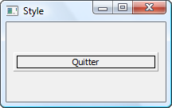
C'est tout ce que vous voulez, sauf joli. Et non, je n'ai pas truqué la capture d'écran juste pour faire comme si c'était une atrocité telle que celle-ci ! ^^ Rien qu'en regardant ça, vous pouvez aisément comprendre que nous avons du pain sur la planche...
Stylisons notre bouton
QStyle, dont hérite QCommonStyle, offre une fonction nommée drawPrimitive(). Nous allons devoir la réimplémenter pour styliser notre bouton. Voici le prototype de la fonction :
Cette fonction va prendre pour arguments un PrimitiveElement, indiquant plus ou moins le type de widget que nous allons à avoir à styliser, un QStyleOption, indiquant quant à lui les options de style en fonction du type d'option, un QPainter qui nous servira à dessiner nos widgets et enfin un QWidget dont vous n'aurez que rarement l'utilité. Je vous conseille vivement de jeter un coup d'œil au tableau contenant de multiples informations sur les différents arguments possibles de cette fonction.
A l'aide du pointeur option de type QStyleOption, nous allons pouvoir récupérer plusieurs informations sur le widget dont trois qui s'avèrent capitales pour pouvoir dessiner nos widgets. Je vous fais un petit tableau de ce qui me semble le plus utile (le quatrième est le moins utile de la liste) :
Membre
Description rapide
rect
Retourne un QRect des dimensions du widget à dessiner.
state
Retourne l'état du widget lors de sa peinture.
type
Pas besoin de détailler, les mots parlent d'eux-mêmes !
direction
Concerne la direction interne du widget, par défaut de gauche à droite.
Cela ne vous étonnera donc pas si le code suivant récupère les valeurs x, y, height et width (soit les quatre valeurs d'un QRect) du widget :
int rectX, rectY, rectLong, rectLarg;
option->rect.getRect(&rectX, &rectY, &rectLong, &rectLarg);
Note : Par expérience, nous savons que nous devons retirer un pixel ou plus de la longueur et de la largeur afin que le rectangle puisse entrer dans la zone du widget. J'ai choisi d'en retirer deux en décalant les coordonnées de x et de y vers l'intérieur du widget : Par expérience, nous savons que nous devons retirer un pixel ou plus de la longueur et de la largeur afin que le rectangle puisse entrer dans la zone du widget. J'ai choisi d'en retirer deux en décalant les coordonnées de x et de y vers l'intérieur du widget :
Maintenant, nous devons émettre une condition pour vérifier que nous allons bien dessiner un bouton à l'aide de l'argument element. Si vous avez regardé le tableau (pas celui que j'ai fait mais celui de la doc de la fonction drawPrimitive()), et bien vous avez dû constater que le choix ne se fait pas tellement pour les boutons, c'est de PE_PanelButtonCommand que nous allons avoir besoin. En résumé, si element est équivalent à PE_PanelButtonCommand, et bien c'est que nous dessinons un bouton.
if(element == PE_PanelButtonCommand)
{
// La suite du code se situera ici...
}
C'est là qu'intervient un autre membre de QStyleOption : state. Cela nous permettra par exemple de vérifier si le bouton est activé ou non, à vérifier si la souris survole le widget (traité dans la sous-partie suivante pour cause de nécessité de deux autres fonctions), à vérifier que le bouton est pressé, etc... Voici un tableau des principaux statuts offerts par QStyle par le biais de option->state dans notre code :
Constante
Valeur correspondante
Description
QStyle::State_None
0x00000000
Indique le widget n'a pas d'état.
QStyle::State_Active
0x00010000
Indique que le widget est actif.
QStyle::State_Editing
0x00400000
Indique que le widget contient un éditeur ouvert.
QStyle::State_Enabled
0x00000001
Sans doute le plus important : indique si le widget est activé.
QStyle::State_HasFocus
0x00000100
Indique si le widget a le focus. Entre autres, cela peut servir à différencier la couleur du cadre du widget par exemple.
QStyle::State_MouseOver
0x00002000
Cela nécessite l'implémentation supplémentaire d'au moins une fonction pour indiquer correctement si la souris survole le widget.
QStyle::State_NoChange
0x00000010
Indique si le widget est cochable aux trois états.
QStyle::State_Off
0x00000008
Indique si le widget n'est pas coché.
QStyle::State_On
0x00000020
Indique si le widget est coché.
QStyle::State_Raised
0x00000002
Indique si le widget est élevé. Regardez aussi QStyle::State_Sunken qui me semble être associé à cela.
QStyle::State_ReadOnly
0x02000000
Indique si le widget est en lecture seule.
QStyle::State_Selected
0x00008000
Indique si le widget est sélectionné.
QStyle::State_Sunken
0x00000004
Indique si le widget est creux ou enfoncé.
Commençons par les options de style les plus simples :
if(option->state & State_Enabled) // Si le statut du bouton à peindre est activé :
{
// On peint un bouton activé.
}
else // Sinon, c'est qu'il est désactivé :
{
// On peint donc un bouton désactivé.
}
Une question doit sûrement vous tracasser : comment vérifier plusieurs éléments dans la même condition ? Et bien de la manière suivante :
Mettons un peu de contenu à la peinture des boutons activés et désactivés :
if(option->state & State_Enabled)
{
// Un gradient pour faire joli...
QLinearGradient gradient;
gradient.setStart(0, rectLarg + 2);
gradient.setFinalStop(0, 0);
gradient.setSpread(QGradient::ReflectSpread);
gradient.setColorAt(0, Qt::white);
gradient.setColorAt(0.5, QColor(233, 233, 233));
gradient.setColorAt(1, Qt::white);
painter->setRenderHint(QPainter::Antialiasing); // On peindra en antialiasing.
painter->save();
painter->setPen(QColor(Qt::black)); // Bordures en noir...
painter->setBrush(QBrush(gradient)); // ... et brosse peignant le gradient.
painter->drawRoundedRect(rectX, rectY, rectLong, rectLarg, 5, 5, Qt::AbsoluteSize); // On dessine un rectangle aux coins arrondis.
painter->restore();
painter->setPen(QColor(250, 250, 250));
painter->drawRoundedRect(rectX + 1, rectY + 1, rectLong, rectLarg, 5, 5, Qt::AbsoluteSize); // Un touche supplémentaire pour faire joli ! ^^
}
else
{
painter->save();
painter->setPen(QColor(173, 178, 181));
painter->setBrush(QBrush(QColor(244, 244, 244)));
painter->drawRect(rectX, rectY, rectLong, rectLarg);
painter->restore();
painter->setPen(QColor(Qt::white));
painter->drawRect(rectX + 1, rectY + 1, rectLong - 2, rectLarg - 2);
}
Je ne prendrai pas le temps de vous détailler plus ce que j'ai fait car ce n'est pas tellement le but du tutoriel que de vous enseigner QPainter et QGradient. Concluons la sous-partie avec la fonction complète suivie d'une capture d'écran du résultat :
Maintenant que l'entrée à été mangée, et bien raclée, voici la suite du menu du jour :
Survol du bouton ;
Dessin du texte.
Survol du bouton
Afin de pouvoir nous servir correctement de QStyle::State_MouseOver, il va être nécessaire de passer par les fonctions polish() et unpolish(). Nous allons utiliser qobject_cast<QPushButton *>(widget) dans une condition, une simple vérification permettant d'éviter des erreurs. Dans le cas où cela retournerait quelque chose, et bien on entrerait dans la condition pour attribuer ou désattribuer au widget Qt::WA_Hover et dans le cas où cela retournerait 0, on ne ferait rien.
Voici le code de ces deux fonctions :
void Style::polish(QWidget *widget)
{
if (qobject_cast<QPushButton *>(widget))
widget->setAttribute(Qt::WA_Hover, true);
}
void Style::unpolish(QWidget *widget)
{
if (qobject_cast<QPushButton *>(widget))
widget->setAttribute(Qt::WA_Hover, false);
}
Il est maintenant temps d'ajouter une condition juste avant la condition if(option->state & (State_Sunken | State_On)) dans la réimplémentation de drawPrimitive(), celle du survol :
Le prototype est lui-même très parlant, je ne saurais mieux vous le détailler. Par contre, je peux vous montrer comment vous en servir ! Juste après sa définition dans le projet tel que la fonction soit vide, nous obtenons une fenêtre comme celle-ci :
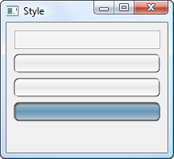
Conclusion : on va devoir se prendre la tête à dessiner le texte du widget ! Un style personnalisé est un style personnalisé, pas question de s'appuyer sur des paramètres prédéfinis !
Nous allons devoir nous appuyer sur deux éléments fondamentaux supplémentaires au texte : l'alignement et si le widget est activé (dans le cas contraire, le texte serait grisé). On arrête de trainasser et on avance !
Et juste après la compilation, vous ouvrez le programme qui s'ouvre sous vos yeux ébahis...
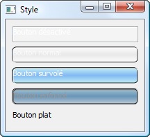
Les plus attentifs auront remarqué une petite flemme d'ajouter une souris manuellement... :-°
Hum... ce n'est pas encore tout à fait ça. Et bien forcément, quand on ne prend en compte ni l'alignement, ni le statut du bouton (ce qui influera sur la couleur du texte), on ne va pas bien loin, vous pouvez me faire confiance. ;)
Et le résultat qui est aussi l'aboutissement du chapitre :
Téléchargement
Dans le cas où vous voudriez tester, améliorer ou autres le programme, j'ai placé ci-dessous un lien permettant de télécharger les sources du projet (quatre fichiers) :
Après cette introduction assez poussée aux styles personnalisés, vous pourrez si vous le souhaitez créer vos propres styles de fenêtres. Désormais, que vous puissiez vouloir une fenêtre sombre comme une nuit sans lune ou bien une jolie fenêtre avec des petits cœurs dessus, et bien ce sera possible ! Un seul conseil, laissez libre cours à votre imagination ! ;)
Il est très fréquent que des zéros posent des questions dans le forum C++ comme : "Comment utiliser la SDL avec Qt ?". Qt possède tout de même de quoi réaliser des programmes utilisant des éléments graphiques, et nous allons apprendre ensemble à en créer.
Comme je le disais dans l'introduction, des questions au sujet d'utilisation de bibliothèques gérant la 2D telles que la SDL, etc. sont très fréquemment posées. Peu de zéros ne semblent être au courant que Qt possède ses propres classes permettant d'ajouter des éléments graphiques dans leurs programmes. J'ai donc décidé de rédiger une sous-partie du big-tuto sur la gestion de la 2D avec Qt, de manière à ce que tous puissent sans problème utiliser la 2D dans leur programmes et ce uniquement avec Qt, donc sans avoir besoin d'installer des bibliothèques.
Je vais vous présenter rapidement à la suite des classes de Qt que nous allons avoir à utiliser...
QGraphicsScene
La classe QGraphicsScene a pour rôle de pouvoir contenir plusieurs éléments en 2D de type graphique. C'est en quelques sortes un conteneur assez parallèle à la classe QWidget, bien que ces deux classes n'aient pas de rapport l'une à l'autre, car QGraphicsScene peut contenir des éléments comme QWidget peut en contenir d'autres. QGraphicsScene a tout de même une particularité : il ne peut pas s'afficher seul, c'est-à-dire qu'il nécessite une autre classe pour pouvoir être visible, QGraphicsView. Pour l'héritage, QGraphicsScene hérite de QObject.
QGraphicsView
QGraphicsView a pour fonction d'afficher le contenu d'un QGraphicsScene. Comme il hérite de QAbstractScrollArea, il peut logiquement posséder une barre de défilement, ce qui peut se révéler très pratique dans certains cas de figure. Cette classe sera particulièrement utile pour nous tout au long de cette partie donc attendez-vous d'autant plus à la revoir par la suite. ;)
QPainter
Cette classe nous servira pour tout ce qui est coloration, formatage de texte, effets, etc...
QRect, QPoint, QPolygon...
Nous aurons certainement à nous servir de ces classes par la suite. Comme le nom de ces classes peut vous l'indiquer, elles servent à ce qui touche la géométrie avec la création de point, de rectangles...
Et bien d'autres
Il reste encore un bon nombre de classes que nous verrons par la suite comme QBrush par exemple, je ne vous les détaille donc pas ici.
Maintenant que nous en avons terminé des présentations rapides des classes, nous pouvons passer à la pratique. Je vous donne rendez-vous à la suite du cours ^^
Nous voici donc à la partie "pratique" avec le traditionnel "Hello World !" Eh oui, nous pouvons aussi afficher du texte dans nos QGraphicsScene. :) Mais tout d'abord, je vous propose de créer un nouveau projet dans votre IDE favori pour pouvoir suivre. Une fois cette opération terminée, je vous invite à créer un fichier main.cpp : nous n'aurons pas besoin de plus de fichiers pour le moment.
Commençons par mettre en place les includes nécessaires à la réalisation de notre premier projet utilisant QGraphicsScene :
#include <QApplication>
#include <QtGui>
C'est par mesure de simplicité que nous avons mis QtGui : nous n'avons pas pour objectif de nous attarder sur une liste d'includes. Nous pouvons désormais entrer dans la partie la plus intéressante de la création de notre premier programme utilisant des éléments graphiques. Il s'agit de créer un QGraphicsScene, de lui mettre dedans du texte et de l'afficher. Pour cela, nous allons procéder dans l'ordre. Créons donc notre QGraphicsScene !
Voici le constructeur (le plus simple) que nous donne la documentation :
Nous avons ici créé une variable de type QGraphicsScene nommée "scene". Son rôle sera d'accueillir le texte ("Hello World !"). Mais comment faire pour mettre du texte ? On a le droit de créer un QLabel ? Quel besoin de créer un QLabel ? Nous allons nous servir de addText() tout simplement :
scene.addText("Hello world !");
Si vous avez retenu ce que je vous ai dit plus tôt, compiler et lancer le programme ne sert actuellement à rien car nous n'affichons pas notre QGraphicsScene. Il faut créer un QGraphicsView pour afficher notre scène :
QGraphicsView vue(&scene);
vue.show();
Je vous donne le code complet que vous pouvez tester :
Maintenant que nous avons réalisé notre première fenêtre avec les classes gérant la 2D de Qt, nous pouvons passer à l'étape suivante qui est la gestion des formes géométriques, des images, etc.
Il est logique que nous ayons besoin de connaître sur le bout des doigts comment créer de telles choses, pour pouvoir accéder par la suite au TP qui correspond à notre objectif final.
Au programme :
création de points ;
de lignes ;
de rectangles ;
d'autres polygones ;
n'oublions pas le texte ;
ouverture d'images.
Il est toutefois bon de savoir qu'il y a à chaque fois deux ou plusieurs méthodes de création de figures ou d'ouverture d'images, chacune aussi utile que ses collègues.
Une fois que nous aurons vu en détail tout cela, nous verrons comment enregistrer votre scène de manière à pouvoir épater vos amis ! ;)
Nous allons voir par la suite les différentes méthodes de création de figures géométriques, quelles qu'elles soient, dans l'ordre croissant de difficulté.
Les points
Les points sont la base de toutes les figures géométriques. Une ligne est constituée de points, tout comme un triangle, un rectangle et ainsi de suite. Il est donc fort probable que vous ayez un jour à vous en servir dans le cadre d'un projet personnel. Voyons ensemble les différentes manières de créer un point avec, tout d'abord, la méthode la plus simple soit la création d'un QPoint :
QPoint point(10, 10); // Avec ici 10 pour la valeur de x et de y.
Note : un QPoint ne peut posséder que des valeurs de x et de y étant entières (comme 1, 32, 97...) et non des valeurs de x et de y décimales. Si vous avez besoin d'utiliser des valeurs décimales, servez-vous de QPointF comme par exemple dans le code suivant :
QPointF point(10.5, 10.5); // Pensez à mettre un point et non une virgule pour chaque chiffre décimal.
Un point, n'ayant ni longueur ni largeur, ne se voit pas. De plus, le code que je vous ai donné ne permet pas d'afficher un point mais uniquement d'en créer un. La méthode pour afficher un point (même s'il ne se verrait pas) serait de passer par les QPolygon (ou par les QPolygonF) de la manière suivante :
QPolygon point;
point << QPoint(100, 100);
scene.addPolygon(point); // scene étant notre QGraphicsScene.
Nous détaillerons cela par la suite avec la création de polygones.
Les lignes
Pour créer une ligne, nous avons bien plus de possibilités que pour créer un point, et vous n'allez pas tarder à découvrir pourquoi. ;) En effet, nous pouvons compter un minimum de cinq classes servant toutes à la création de lignes.
QLine
QLine, comme QPoint, n'accepte pas les nombres décimaux. Voici un exemple de code se servant de QLine :
Je vous mets deux captures d'écran pour vous montrer le changement. ^^
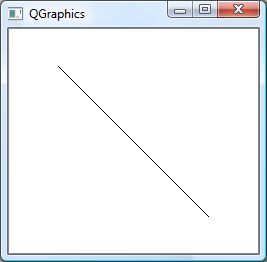
Ligne n'utilisant pas QPen
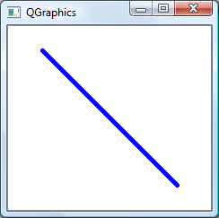
Ligne utilisant QPen
Allez savoir qu'est-ce qui est le mieux. :p
QLineF
QLineF a exactement la même utilité pour créer une ligne que QPointF l'a pour créer un point : ces deux classes gèrent les chiffres décimaux. À part cela, le mode de création est quasi-identique.
QGraphicsLineItem
C'est encore une autre manière de créer une ligne. Nous ne nous y attarderons pas. Je vous donne un exemple de création :
QGraphicsLineItem ligne(50, 50, 200, 200);
QPolygon et QPolygonF
Ces deux classes reviennent un peu partout si vous avez remarqué. Eh bien oui, toutes les figures géométriques sont à la base des polygones. Un petit bout de code vous montrant comment créer une ligne avec un QPolygon serait le bienvenu, n'est-ce pas ?
Une fois de plus, les possibilités de création de rectangles ne manquent pas. Nous allons tenter de faire le tour plus ou moins rapidement, en fonction de l'intérêt des classes.
Note : je vais désormais me mettre à traiter fréquemment dans cette fin de chapitre deux classes à la fois car, vous l'ayant déjà répété plusieurs fois, les classes comme QRect et QRectF par exemple sont presque identiques et vous connaissez déjà la différence entre les deux.
QRect et QRectF
Ces classes incontournables dans le cas de la création de rectangles, à la fois simples et efficaces, sont celles que nous allons voir en premier. Nous pouvons les utiliser à travers deux méthodes : soit on utilise directement addRect() de QGraphicsScene, soit on crée un QRect puis on l'affiche.
scene.addRect(10, 10, 100, 50); // Avec dans l'ordre la valeur de x, de y, de la longueur et de la largeur.
Cette première méthode, la plus simple, a tout de même un défaut : on ne peut pas récupérer le rectangle pour le modifier, le remettre quelque part ou autre. Je vous recommande donc de passer par la seconde méthode qui est la suivante :
Cette classe permet aussi de créer des rectangles mais je ne vous la détaillerai pas ici.
QPolygon et QPolygonF
Et encore ces classes. ;) Je ne vous mets pas d'exemple, nous allons enfin voir juste en-dessous ces classes.
Un exemple de rectangle bleu
Peut-être vous êtes-vous demandé comment faire pour colorer l'intérieur d'un rectangle, non ? Eh bien voici un exemple pour le colorer en bleu à l'aide de QBrush (nous devons tout de même créer une variable de QPen pour que ça fonctionne) :
Note : nous pouvons faire cela pour presque toutes les figures géométriques. Je vous invite d'autant plus à aller regarder dans la doc de QBrush comment charger des textures, etc.
Des polygones (excepté les ellipses)
C'est ici que le choix se fait moins important. Nous avons QGraphicsPolygonItem (que je ne détaillerai pas), QPolygon et QPolygonF. Le mode de construction que je vous donnais au-dessus correspondait en fait à un système particulièrement pratique et simple d'utilisation. Je vous remets un de ces codes, je vous l'explique puis je vous donne des exemples d'utilisation de QPolygon pour la création de différentes figures, ça vous va ? :o
Pour créer une ellipse, nous n'avons que peu de solutions et nous n'allons en voir que deux. Une ellipse peut tout à fait être un ovale ou un cercle, un rectangle peut être un carré. Un cercle est un cas particulier d'ovale, un carré est un cas particulier de rectangle. Vous devez sûrement vous demander pour quelle raison je fais le rapprochement entre une ellipse et un rectangle. Eh bien aussi étrange que cela puisse paraître, nous avons besoin de créer un rectangle pour créer une ellipse. Voici la première méthode de création d'une ellipse :
Maintenant que nous avons vu tout cela, vous devez pouvoir être capable de vous exercer à la création de figures géométriques. Comme le dit le proverbe, "c'est en forgeant qu'on devient forgeron" : plus vous pratiquerez, plus vous aurez de connaissances et mieux vous maîtriserez le sujet.
Je vous donne une petite liste d'exercices non corrigés que vous pouvez facilement suivre à votre niveau :
Écrivez votre nom uniquement à l'aide de QPolygon dans une scène.
Créez plusieurs formes géométriques diverses et variées.
Concevez une carte au trésor (utilisez QPen en plus de figures géométriques).
Faîtes une mini rosace avec des ellipse et d'autres formes (n'hésitez pas à consulter la documentation en cas de soucis).
Le texte, les images et l'enregistrement de votre scène
Le texte - Courte mise au courant
Lors de la réalisation de votre toute première scène, vous avez utilisé une des méthodes d'affichage de texte avec addText(). Or, il existe d'autres solutions : nous pouvons passer par un QString, par la classe QGraphicsTextItem ou encore par QGraphicsSimpleTextItem. Prouvez une fois de plus que la documentation sert à quelque chose et allez vous renseigner de ce pas. :p
Les images
Par chance pour nous, il est possible de charger des images (bien que nous puissions faire d'innombrables autres choses avec ce que je vais vous donner en fin de phrase) dans nos scènes à l'aide de addPixmap().
Voici une des manières de chargement d'image :
scene.addPixmap(QPixmap("image.png"));
Cette manière de procéder montre aussi des défauts : on ne peut pas récupérer le pixmap, le modifier, etc. Je vous conseille donc de créer une variable de type QPixmap et de l'ajouter à la scène. Voici la méthode :
Comme nous avons déjà vu pas mal de choses, on peut facilement s'attendre à ce que vous ayez déjà fait une superbe scène que vous aimeriez assez montrer à vos proches.
Hep là, pas si vite ! Qu'entends-tu par "enregistrer" une scène ? Est-ce enregistrer notre scène pour pouvoir l'ouvrir plus tard ?
Non ce n'est pas tellement ça mais ce n'est pas entièrement faux. Quand je vous dis enregistrer une scène, c'est l'enregistrer sous le format d'une image. Ce n'est donc pas entièrement faux dans le sens où l'on peut toujours charger la scène enregistrée plus tôt à l'aide de addPixmap() que nous avons vu au-dessus.
Si vous voulez avoir le même résultat que moi, je vous conseille tout d'abord de télécharger cette image :
Voici un code incorrect pour effectuer l'enregistrement :
J'attire votre attention sur la ligne surlignée : eh oui, le négatif, ça existe. :-°
Bon, ce n'est pas tout ça mais, pourquoi ce code est-il incorrect pour le cas de l'enregistrement ?
Eh bien il est incorrect car si vous enregistrez votre scène, comment le programme peut-il choisir la couleur de fond de votre scène ? De plus, les dimensions de la scène ne sont pas spécifiées, comment voulez-vous qu'il devine ses dimensions ? (On peut corriger ça sans avoir besoin de fixer les dimensions, je vous expliquerai après.) À part cela, le code est correct.
Je vous invite donc à corriger le code ci-dessus vous-même (recommandé). Mais je vous donne tout de même une correction :
C'est le QGraphicsView qui va être enregistré : vue.width().
Comme on se sert de width() et de height(), vous pouvez comprendre qu'il n'était pas particulièrement nécessaire de mettre des dimensions fixes à notre QGraphicsView.
painter.setRenderHint(QPainter::Antialiasing); On met ici le type de qualité du rendu que l'on va faire. Nous ne manquerons pas à l'habitude en se servant de QPainter::Antialiasing qui est très utilisé.
vue.render(&painter); Et là, c'est render() que nous utilisons. Il s'agit d'une fonction de QGraphicsView qui sert à capturer le contenu de la vue, dans le cas actuel évidemment. ;)
Il ne reste plus que la sauvegarde. Nous n'aurons pas besoin de quoi que ce soit de plus que save() de QPixmap qui va, comme son nom l'indique, sauvegarder le pixmap. Voici le code complet de la sauvegarde de la scène :
A priori, vous devriez voir un fichier nommé image.png apparaître à côté de votre programme une fois que vous aurez lancé celui-ci. Cette image devrait ressembler à cela :
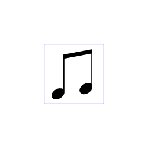
Voilà, ce chapitre est terminé. Je vous recommande de vous entraîner et, qui sait, vous ferez peut-être de si jolies choses que vous ferez saliver vos amis. :lol:
Allez, bon codage et à plus tard avec un joli petit TP !
Nous entrons maintenant dans la dernière ligne droite avant le premier TP ! Ce chapitre est très important pour comprendre l'intérêt d'utiliser Qt pour de la 2D et non forcément inclure par exemple la SDL dans vos projets...
Je compte sur vous pour bien faire attention à ce que vous allez lire. ;)
Il est possible que vous ayez été confronté à une ou plusieurs difficulté(s) durant les exercices non corrigés que je vous ai donnés précédemment. Dans le cas précis, je parle de placement et autres de vos figures dans votre scène (à peu près tout ce qui touche les coordonnées et les dimensions de vos figures géométriques).
Cette partie de chapitre a pour objectif de vous préparer rapidement pour pouvoir observer le fonctionnement des QGraphicsItem en tous genres, ne la négligez donc pas !
Les rectangles et les ellipses, comment ça fonctionne ?
Voici une très bonne question ! En fait, les rectangles et les ellipses fonctionnent à peu près de la même manière, nous avons donc la possibilité de traiter les deux à la fois. Nous allons donc étudier ceci à l'aide de la classe QRect qui me semble être appropriée (du moins, s'il est possible et même certain que je ne vous donne pas un code à étudier mais un schéma, pensez à QRect : cette classe sera la base des schémas que je vous donnerai dans cette partie de sous-partie :p )
Admettons que l'un de nos programmes nécessite la création d'un rectangle et d'une ellipse à des coordonnées précises. Pour pouvoir créer ce rectangle et cette ellipse, nous allons avoir a regarder de ce schéma :
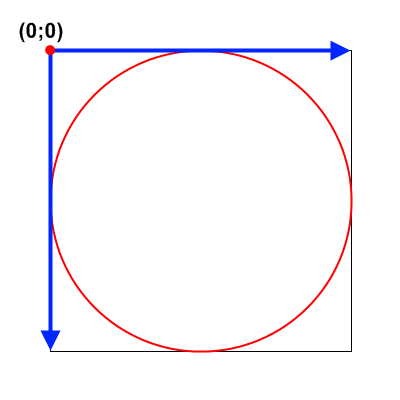
Comme vous pouvez le voir, nous avons un rectangle (un carré plus précisément mais ce détail ne nous intéresse pas) avec dedans une ellipse (un cercle mais ce détail est expliqué à la suite) et en haut à gauche de cette figure, nous avons le point aux coordonnées (0; 0). Cette dernière chose représente les coordonnées de la scène où se trouveraient nos deux figures. Tout d'abord, étudions la création du rectangle. Je vous rappelle à tout hasard que la création s'effectue en donnant les coordonnées d'un point puis une longueur et une largeur. Ce point est le gros point rouge aux coordonnée 0, 0. C'est le point duquel partent la longueur et la largeur du rectangle, représentées par les flèches bleues. Or, une fois que nous avons une longueur et une largeur d'un rectangle, nous avons de quoi tracer le rectangle, c'est donc suffisant.
Passons maintenant à l'étape suivante : l'ellipse. Tout comme le rectangle, nous avons besoin de la position d'un point pour pouvoir créer une ellipse. C'est assez logique car le mode de création est le même (le point de départ est la même classe), à un point prêt : nous nous servons d'addEllipse() et non d'addRect(). Mais ce point, quel est-il ? Et bien ce point est le même que le sommet du rectangle ont nous avons parlé plus tôt, tout simplement. On peut donc dire que les deux figures partent du même point... Pour ce qui est de la longueur et de la largeur, c'est pareil qu'au-dessus.
Qu'en est-il des lignes et des polygones ?
Et voici un schéma :
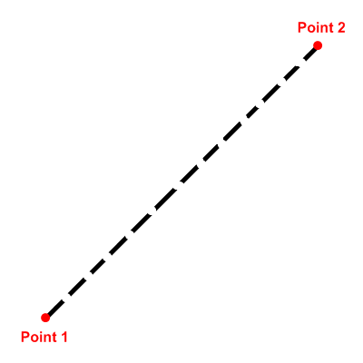
Nous avons sur ce schéma deux points rouges légendés. Lors de la création d'un QLine (ne prenez pas ici pour base QRect : nous avons changé de partie de sous-partie de chapitre), nous avons tout d'abord à définir les coordonnées du point 1 puis celles du point 2. A partir de ces deux coordonnées, nous obtenons une ligne. C'est pour cela que je l'ai mise en pointillés : car nous ne donnons pas de dimensions précises à notre ligne, mis à part les coordonnées des extrémités.
Je ne vais pas faire l'affront de vous remettre le même schéma pour QPolygon étant donné que le principe de création est exactement le même puisqu'on ne fait que définir des points.
QGraphcisItem est un des éléments majeurs de la 2D avec Qt. Il peut servir à un bon nombre de choses une fois associé à la classe QGraphicsScene.
Définir un QGraphicsItem
Le principe de définition d'un QGraphicsItem est relativement simple, tout comme la définition d'objets appartenant à d'autres classes. En admettant avoir créé les variables scene et rectangle respectivement de type QGraphicsScene, un code courant serait celui-ci :
Il est fort possible que certains se demandent pourquoi j'ai introduit la fonction addRect() ici mais peut-être aussi quel est le rapport entre les classes QGraphicsScene et QGraphicsItem, mis à part le préfixe QGraphics. Regardons ensemble un des prototypes de la fonction en question :
Nos connaissances sur la fonction et ce prototype, coupé volontairement aux informations qui nous intéressent, montrent qu'elle ajoute un rectangle dans un élément de QGraphicsScene (donc dans scene pour nous) et retourne un pointeur de type QGraphicsRectItem. Voici un petit arbre montrant la hiérarchie de cette classe et de ses principales classes sœurs par rapport à QGraphicsItem dont ils héritent :
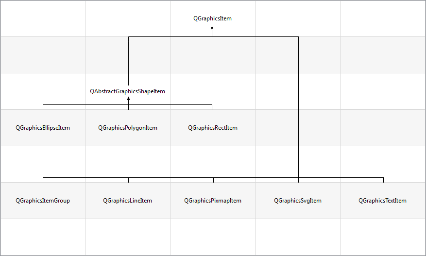
Le code ci-dessus est donc l'équivalent de celui-ci :
Par contre, on ne pourra pas utiliser d'autres classes héritant de QGraphicsItem pour effectuer cette opération.
Une autre façon de définir un QGraphicsItem dans une scène est de le créer et de l'afficher de la manière suivante :
QGraphicsLineItem *ligne = new QGraphicsLineItem(0, 0, 230, 230);
scene.addItem(ligne);
Les utilités de récupérer un pointeur, après exécution de l'une de ces fonctions, sont en fait de pouvoir le supprimer (ce qui retirera de la scène la forme quelconque associée au pointeur), de déplacer par son intermédiaire l'objet graphique sur lequel il pointe, le modifier, recevoir des évènements en fonction des actions de l'utilisateur, et bien d'autres choses encore ! Cela peut d'avérer très utile dans le cas où vous réaliseriez un logiciel du type Paint pour l'historique des actions ayant été effectuées et donc pour permettre pleins de choses supplémentaires.
Ah oui, j'oubliais, QGraphicsItem détient une fonction, setZValue(), qui permet de régler les problèmes de superposition d'éléments graphiques. Nous verrons cela dans ce chapitre.
Le positionnement
A partir de maintenant, nous allons prendre pour base le code suivant :
Ce code n'a rien d'extraordinaire, on ne fait que des opérations courantes, peut être que ce type d'assignement d'image à une variable de type QPixmap vous échappait jusqu'à maintenant, mais j'en doute... En tant que widget de haut niveau, vue dispose ici de setFixedSize(), utilisé pour que vous puissiez voir la progression au fil de votre avancée dans le chapitre, et de setWindowTitle() pour faire joli. ^^
Pour le moment, le résultat est le suivant (cliquez pour agrandir !) :
Nous pouvons maintenant commencer ! Le positionnement d'un élément graphique est toujours important quand on souhaite éviter un entassement de plusieurs éléments au même emplacement de la scène, puisque par défaut, toutes les figures ou autres ajoutées à la scène sont placées aux coordonnées (0;0). La fonction setPos() permet de placer n'importe quel objet de QGraphicsItem (ainsi que les objets de ses sous-classes) à l'emplacement d'un QPointF ou des valeurs de x et de y.
Il est presque certain que vous aurez besoin de supprimer à un moment ou à un autre un QGraphicsItem d'une scène. La méthode la moins brutale est de passer par la fonction removeItem() de QGraphicsScene de la manière suivante :
scene.removeItem(item);
Notez que le pointeur n'est pas détruit : la fenêtre affichera votre image si vous refaites "item = scene.addPixmap(image); " ! C'est d'ailleurs pour cette raison qu'il faut passer par "delete item; " pour éviter une fuite de mémoire.
La Z-Value
La Z-Value, aussi appelée z-index, permet de définir l'élévation des objets de QGraphicsItem afin d'éviter des problèmes de superposition très peu prévisibles. Par défaut, la Z-Value est définie à 0 (ce qui pose donc un problème car il faut bien choisir quel sera l'élément situé au-dessus de l'autre dans le cas où ils seraient disposés au même endroit). Pour modifier cette valeur, nous utilisons la fonction setZValue() de la manière suivante :
item->setZValue(5);
Cette propriété nous servira dans le chapitre suivant.
La rotation
Tout d'abord, je vous conseille de garder en tête que la fonction rotate() existe, vous en aurez besoin si vous passez au chapitre suivant. La fonction permet donc de faire roter un élément graphique sur le point sur lequel il est basé de x degrés avec x étant un réel (donc possibilité de faire une rotation avec une valeur d'angle négative). Utiliser setPos() dans un cas comme celui-ci s'avèrerait donc être une judicieuse idée ! ;)
Nous voici maintenant dans le premier TP de la partie sur la 2D avec Qt. Je préviens à tout hasard que le résultat pourra servir aux habitués des retard au bureau/en cours !
Maintenant que j'ai pris mes précautions cela a été dit, nous pouvons commencer le TP qui s'organisera sur trois parties :
Notre commanditaire est une riche jeune fille célibataire de 19 ans personne désirant vous embaucher pour lui réaliser un réveil qui lui servira tous les jours. Voici sa commande :
Citation : Notre commanditaire
Bonjour,
Je m'adresse à vous en tant qu'employeur qui vous embauchera, si vous l'acceptez, en contrat à durée déterminée (le temps que vous ayez fini de concevoir ce dont j'ai besoin) pour un total de 200 styllards fournis à l'expiration du contrat. Pour être franche avec vous, je suis relativement souvent en retard. Le temps que je m'habille, que je me frise les cheveux, que je me poudre le visage, que je me vernisse les ongles, [..], et bien j'ai déjà une heure et demie de retard. Je vous vois déjà en train de me dire de me lever plus tôt ! Et bien je n'aime pas le "drrriiiiiiinnnng" strident de mon réveil qui me met en rogne le matin quand il sonne avant 5h. Comme je me suis acheté un magnifique ordinateur portable digne de ma beauté personnelle (qui reste allumé en permanence, sa fonction de chaine Hifi étant excellente), et bien je me suis dit que ce serait bien de lire un son provenant de ce bel objet et non de cet immonde réveil sorti des latrines de mon voisin. J'ai récemment eu vent que vous êtes en train d'approfondir vos connaissances avec "Qt". Peu importe ce que c'est, réalisez le réveil avec, si cela le permet.
Dans mon réveil, je voudrais avoir plusieurs options : voir l'heure de mon ordinateur (qui s'actualisera toutes les secondes), pouvoir modifier l'heure prévue de la sonnerie rapidement (sans passer par un menu-qui-me-fera-perdre-mon-temps), voir les infos du son que j'ai mis (je ne changerai pas forcément le nom du son donc play.wav, ça ira très bien) comme le nom du son, l'heure où il se jouera, juste pour le plaisir d'avoir quelque chose dans un menu, autre que l'éternel "Quitter" ou le "A propos" qui infeste les programmes. Ah, j'y pense, il ne faut pas que le réveil se dérègle dans le cas où je rabattrais mon écran. Une dernière demande : pouvez-vous créer une horloge animée pour faire joli ?
Je vous remercie d'avance, Laura de Latour.
Comme vous l'avez compris dans cette longue commande, nous allons réaliser un réveil avec Qt (et ne me demandez pas ce que représente 200 styllards, je n'en sais rien :p ). Je vous vois déjà me demander le rapport entre un réveil et la 2D : c'est la pendule qui se trouvera dans la fenêtre principale (Laura en demande une). Elle sera créée entièrement avec les outils qu'on a vus, pas question de se servir d'un widget tout fait comme on en voit dans Qt Designer et ailleurs.
Comme une image s'avère ici être bien plus instructive que des masses d'explications, voici une capture d'écran du programme terminé :
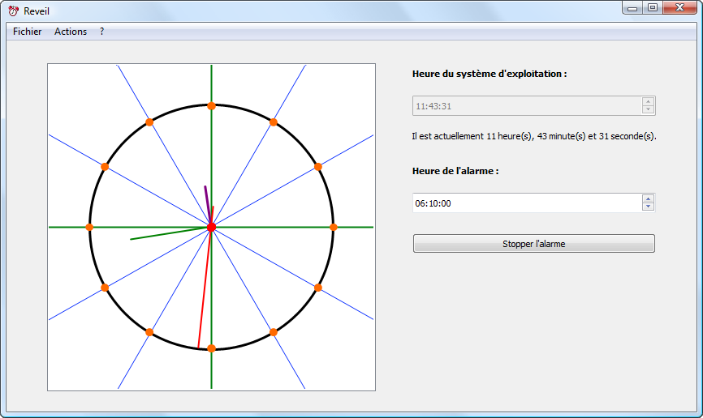
A gauche, le widget utilisé n'est autre qu'un QGraphicsView affichant un QGraphicsScene, bref, on ne change aucunement nos habitudes concernant le choix de widget. Pour votre information personnelle, l'affichage se fait en anti-aliasing pour avoir plus de netteté (regardez setRenderHints()). Je vous laisse vous renseigner sur la procédure à suivre pour faire la même chose que moi. ;) A droite, en-dessous du label "Heure du système d'exploitation" et du label "Heure de l'alarme", j'ai utilisé la classe QTimeEdit qui semble parfaitement adaptée à ce que nous voulons faire. Il est évident que la sonnerie va se déclencher lorsque les deux QTimeEdit auront la même valeur. Je vous conseille de vous servir de QTimer pour la gestion du temps... Pour le son, j'utilise QSound. Le défaut est la limitation importante sur l'extension du son mais nous travaillons avec Qt donc le choix ne se fait malheureusement pas pour moi dans le cas présent. Si vous voulez utiliser FMOD ou ce que vous voulez d'autre, n'hésitez pas !
Dans les trois menus, j'ai placé trois actions :
Menu "Fichier" : Quitter ;
Menu "Action" : Sonnerie ;
Menu "Aide" : A propos.
Je vous conseille vivement de recentrer votre scène avant d'y ajouter des objets. Par exemple, si elle était de 400x400px, on aurait le code suivant :
scene->setSceneRect(-200, -200, 400, 400);
Au final, on aurait le point (0, 0) centré sur la scène. L'utilité serait d'effectuer un placement de la base de vos aiguilles sur ce point.
Deux images sont disponibles. La première est l'icône du programme et la seconde est l'arrière-plan de l'horloge. N'hésitez pas à vous en servir, je les ai faites uniquement pour ce tutoriel (sans prendre en compte mon propre réveil). Cela ne rendra que plus joli votre réveil... ;)
Avec tout ce que nous avons vu jusqu'à maintenant et éventuellement quelques recherches du côté de QTimer, de QSound et de QTimeEdit, vous devriez réussir sans peine ce TP. Bon codage et à tout à l'heure !
Vous avez terminé de coder votre réveil ? En voici la correction...
Un peu de maths
Une horloge est un disque. Pour faire un tour complet, une aiguille doit effectuer une rotation de 360°.
La petite aiguille fait une rotation de 360° en douze heures ;
La grande aiguille fait une rotation de 360° en une heure ;
La trotteuse fait une rotation de 360° en une minute.
Calcul de la rotation de la petite aiguille (par heure, min et sec) :
12h = 360°, donc 1h = 360/12 = 30°, 1min = 30/60 = 0.5 et 1sec = 0.5/60 = 0.0083333333°. Ainsi, la petite aiguille parcourt 0.0083333333° en une seconde, 0.5° en une minute et 30° en une heure.
Calcul de la rotation de la grande aiguille (par min et sec) :
1h = 360°, donc 1min = 360/60 = 6° et 1sec = 6/60 = 0.1°. Ainsi, la grande aiguille parcourt 0.1° en une seconde et 6° en une minute.
Calcul de la rotation de la trotteuse (par sec) :
1min = 360° donc 1sec = 360/60 = 6°. Ainsi, la petite aiguille parcourt 6° en une seconde.
Les explications et le code
Mon projet est composé de trois fichiers :
main.cpp
FenPrincipale.h
FenPrincipale.cpp
Voici l'éternel main.cpp du programme qui restera inchangé durant toute la correction (libre à vous d'y ajouter la traduction du programme) :
Personnellement, j'ai l'habitude de commencer par l'architecture de mes fenêtres lors de l'entreprise d'un projet. Une fois que j'ai terminé cela, je passe aux fonctionnalités diverses et variées que peut fournir mon programme. Je ne vais donc pas manquer à la règle et je vais donc commencer par cette architecture. Comme surcharger le constructeur de la classe en la créant ne serait pas sympa envers les personnes souffrant d'uglysourcecodophobie, et bien nous allons réaliser l'architecture en utilisant des fonctions personnalisées.
#include "FenPrincipale.h"
FenPrincipale::FenPrincipale()
{
setWindowIcon(QIcon("icone.png")); // Une icône pour le programme
setFixedSize(850, 480); // Dimensions fixées à 850x480px
creationMenus();
creationPendule();
// ...
}
La fonction creationMenus() est une fonction simple que vous avez déjà étudiée dans le tuto de M@teo21 :
Juste après la création de scene, je me suis servi de la fonction setSceneRect() dont l'effet avec les valeurs données est de décaler les points de la scène de manière à ce que le point (0;0) soit centré et non situé en haut à gauche de la scène. Puis je définis des QPen qui serviront à la couleur des aiguilles que je crée tout de suite après cela en leur appliquant les pinceaux créés. Cette méthode ne devrait pas vous être étrangère, nous l'avons vue dans les chapitres précédents. Afin d'éviter les superpositions des aiguilles, j'utilise setZValue() pour empiler les aiguilles dans l'ordre trotteuse, grande aiguille puis petite aiguille (la trotteuse se situera donc au-dessus des autres aiguilles). Pour un effet de style, j'ajoute un gros point rouge situé au centre de la scène et se positionnant au-dessus des aiguilles pour simuler le fait que la trotteuse ne soit pas une simple ligne. Je finis par créer la vue (à laquelle j'applique l'anti-aliasing du contenu et du texte).
Et j'appelle une autre fonction qui permettra de placer les aiguilles au bon endroit dans la scène par rapport à l'heure actuelle, reglagesAffichage(). Mais avant de traiter cette fonction qui ne correspond pas exactement à l'architecture, retournons dans le constructeur de la classe FenPrincipale, il reste des choses à faire !
QLabel *label_titre_timer = new QLabel("<b>Heure du système d'exploitation :</b>", this);
label_titre_timer->setGeometry(500, 50, 300, 25);
ordi_time = new QTimeEdit(this);
ordi_time->setGeometry(500, 90, 300, 25);
ordi_time->setTime(QTime::currentTime());
ordi_time->setEnabled(false);
label_time = new QLabel(this);
label_time->setGeometry(500, 115, 300, 50);
QLabel *label_titre_alarme = new QLabel("<b>Heure de l'alarme :</b>", this);
label_titre_alarme->setGeometry(500, 170, 300, 25);
heure_alarme = new QTimeEdit(this);
heure_alarme->setGeometry(500, 210, 300, 25);
connect(heure_alarme, SIGNAL(textChanged()), this, SLOT(actualiserFenetre())); // On peut aussi utiliser timeChanged pour signal...
Vous pouvez aisément remarquer que j'ai défini deux QTimeEdit (ordi_time et heure_alarme) de la même manière que la création de boutons. A votre stade, le fait que le mode de création de widgets soit identique ne devrait pas vous étonner le moins du monde.
ordi_time->setTime(QTime::currentTime());
Cette ligne permet d'assigner l'heure du système d'exploitation à notre QTimeEdit. Juste après, j'ai désactivé ce widget (on peut aussi dire que je l'ai grisé) afin d'éviter que l'utilisateur puisse toucher à la valeur contenue par le widget (l'heure).
Maintenant, traitons la fonction reglagesAffichage(). Comme son nom l'indique, cette fonction a pour objectif de faire faire aux aiguilles une rotation de manière à ce que les aiguilles soient placées correctement, en accord avec l'heure de l'ordinateur. A ce stade, les aiguilles sont toutes positionnées sur 0/12h, nous n'avons donc plus qu'à appeler la fonction rotate(), avec les calculs effectués plus tôt, dont je vous ai parlé plus tôt dans le chapitre sur les QGraphicsItem. Comme les aiguilles subissent des rotations, l'idéal est d'utiliser la fonction resetTransform() avant d'utiliser la fonction rotate().
On a donc le code suivant :
void FenPrincipale::reglagesAffichage()
{
int h = QTime::currentTime().hour();
int min = QTime::currentTime().minute();
int sec = QTime::currentTime().second();
// Rotation de la troteuse :
troteuse->resetTransform();
troteuse->rotate(6 * sec);
// Rotation de la grande aiguille :
grandeAiguille->resetTransform();
grandeAiguille->rotate((0.1 * (min * 60)) + (0.1 * sec));
// Rotation de la petite aiguille :
petiteAiguille->resetTransform();
petiteAiguille->rotate((0.0083333333 * sec) + (0.5 * min) + (30 * h));
}
Désormais, nos aiguilles se placent correctement à l'ouverture du programme, mais ce n'est pas encore le cas une seconde après. Je précise qu'avec :
int h = QTime::currentTime().hour();
int min = QTime::currentTime().minute();
int sec = QTime::currentTime().second();
Les variables h, min et sec contiennent respectivement la valeur de l'heure, des minutes et des secondes de l'ordinateur. Je vous propose donc d'ajouter plusieurs choses dans le constructeur de la classe :
son_alarme = new QSound("play.wav", this); // play.wav correspond au son qui sera joué lors de la sonnerie
QPushButton *boutonSonnerie = new QPushButton("Stopper l'alarme", this); // Je ne pense pas nécessaire de vous dire à quoi sert le bouton...
boutonSonnerie->setGeometry(500, 260, 300, 25);
connect(boutonSonnerie, SIGNAL(clicked()), son_alarme, SLOT(stop()));
// Dans le cas où l'heure de l'ordinateur et celle de la sonnerie serait identique, on lance le son :
if(ordi_time->text() == heure_alarme->text())
{
son_alarme->setLoops(-1);
son_alarme->play();
}
label_time->setText("Il est actuellement " + QString::number(QTime::currentTime().hour())
+ " heure(s), " + QString::number(QTime::currentTime().minute())
+ " minute(s) et " + QString::number(QTime::currentTime().second()) + " seconde(s).");
Sur ce, je me permet de vous laisser ajouter un QTimer ayant une intervalle d'une seconde et se connectant à la fonction actualiserFenetre() lors de l'arrivée du signal timeout(). Dans cette fonction actualiserFenetre(), nous avons plusieurs choses à faire :
Vous vous souvenez du QLabel affichant l'heure ? Et bien le texte ne va pas s'actualiser tout seul, malheureusement.
La principale fonction d'un réveil est de sonner : on doit donc vérifier si c'est le moment d'envoyer le son.
Et en dernier plan, il faut mettre la position des aiguilles à jour.
Pour cette dernière opération, nous allons tout simplement nous servir de la fonction reglagesAffichage(). Mais nous allons tout de même passer par une nouvelle fonction qui actualisera l'instance de QLabel dont nous parlions.
C'est ainsi que nous terminons la plus grosse partie du réveil, la partie qui sert entre guillemets "à quelque chose". Pour les dernières lignes de codes, nous allons juste créer les fonctions appelées par les menus :
void FenPrincipale::infosSonnerie()
{
QMessageBox::information(this, "Réveil", "Ci-dessous se trouvent les informations concernant la sonnerie :<br />"
"Nom du son : " + son_alarme->fileName() + "<br />"
"Heure de la sonnerie : " + heure_alarme->time().toString());
}
void FenPrincipale::ouvrirApropos()
{
QMessageBox::information(this, "Réveil", "Merci d'utiliser ce réveil.<br />"
"Il a été codé par Amnell dans le cadre <span style='text-decoration: line-through;'>de son usage personnel</span>"
" du TP sur la gestion de la 2D avec Qt.");
}
Maintenant que le réveil est codé, nous pouvons l'améliorer !
Dans un bon nombre de réveils se trouve une petite aiguille jaune indiquant l'heure du réveil (les calculs de sa rotation sont les mêmes que ceux de la petite aiguille). Pourquoi ne pas en ajouter une à notre horloge ?
La fenêtre dispose actuellement de dimensions fixes. Peut être que la rendre entièrement extensible serait une bonne idée...
Personnellement, je trouve qu'une fenêtre qui traine sur mon écran est gênante quand je ne travaille pas dessus. Qt dispose d'une classe très pratique pour placer la fenêtre dans la barre des tâches (avec cela, on peut toujours accéder à la fenêtre, ce qu'on ne pourrait pas faire en la masquant tout simplement) : QSystemTrayIcon.
Actuellement, l'utilisateur de ce réveil se trouve très limité dans le choix de son alarme. Il serait bien de permettre à l'utilisateur de choisir le son qu'il veut utiliser (vous devrez malheureusement passer par delete et new si vous utilisez la classe QSound et si vous êtes sous une version de Qt inférieure à 4.5.2 : peut être qu'il sera un jour possible d'appeler une fonction, actuellement inexistante, setFileName(const QString & filename)). Quitte à permettre à l'utilisateur de choisir sa sonnerie, ça pourrait être intéressant de gérer une liste de lecture.
Je pense que ce serait intéressant d'ajouter une fonctionnalité : pouvoir voir le temps restant avant la sonnerie soit au niveau de la fenêtre principale, soit dans la boîte de dialogue appelée par la fonction infosSonnerie().
Comme quoi la 2D avec Qt, ça peut être utile dans la vie courante ! Je tiens à préciser que cette étape est très importante pour la suite du tutoriel car c'est un grand pas vers l'objectif final de la partie sur laquelle nous travaillons. Une dernière chose avant de nous quitter : comme vous l'avez sûrement remarqué, la gestion du temps est un très bon camarade de la 2D (c'est le principe du déroulement de l'action en fonction du temps), bien qu'il ne soit pas forcément utilisé dans tous les projets en 2D. ;)
Citation : conversation entre vous et moi
Moi : Laura de Latour me charge de vous donner vos styllards... Vous : Passe-moi plutôt son numéro de portable, je ne ferai rien de ses styllards ! Moi : Secret professionnel, désolé. Vous : Rhooo... RADIN !!!
Comme vous l'avez peut-être remarqué, ce tutoriel n'est pas fini. Des chapitres viendront encore s'ajouter petit à petit à ceux déjà existants. Il est aussi important de prendre en compte le fait qu'un cours sur la programmation tel que celui est comme un cours donné à l'école, il nécessite d'être assimilé par des exercices, donc de la pratique. La documentation aussi est là pour vous aider. Même si vous avez du mal à entrer dedans, elle peut permettre bien plus que la lecture de différents cours, même si ces derniers sont parfois utiles à la compréhension de certains concepts.
Si vous souhaitez contacter les rédacteurs de ce cours afin de leur faire parvenir un message en privé, contactez l'équipe Qt's Programmers en suivant les étapes décrites sur la page de présentation de l'équipe.
Édité par : Qt's Programmers L'équipe officielle du tutoriel !
{kind=link}
{kind=link}
{kind=link}
{kind=link}
{kind=link}
{kind=link}
{kind=link}
{kind=link}
{kind=link}